# install.packages("tidyverse")
# install.packages("boot")
# install.packages("bootES")
# install.packages("kableExtra")
# install.packages("ggpubr")
# install.packages("ggpp")
# install.packages("gt")
# install.packages("patchwork")
# install.packages("rsvg")
# install.packages("grid")
# if (!require("devtools")) install.packages("devtools")
# devtools::install_github("psyteachr/introdataviz")
# install.packages("ggtext")
# install.packages("ggbeeswarm")
# install.packages("lme4")
# install.packages("lmerTest")
# install.packages("merTools")
# install.packages("emmeans")
# install.packages("performance")
# install.packages("qqplotr")
# install.packages("ggplotify")
# install.packages("dtwclust")
# install.packages("cluster")
# install.packages("ggh4x")Statistical Analyses
Load all required packages
Install if required:
Load:
library(tidyverse)
library(boot)
library(bootES)
library(kableExtra)
library(ggpubr)
library(introdataviz)
library(ggpp)
library(gt)
library(patchwork)
library(rsvg)
library(grid)
library(ggbeeswarm)
library(lme4)
library(lmerTest)
library(merTools)
library(emmeans)
library(performance)
library(qqplotr)
library(ggtext)
library(ggplotify)
library(gtable)
library(dtwclust)
library(cluster)
library(ggh4x)
set.seed(12765)Demographic and anthropometric data analysis
Load input data:
demographic_anthropometric_force_data <-
read_csv("demographic_anthropometric_force_data.csv") %>%
mutate(testing_group = as.factor(testing_group))Descriptives table
Table 1 Anthropometric and demographic data. Shown as means (± standard deviation (SD)).
Show function to create descriptives table
# FUNCTION: create_descriptives_table
# Creates formatted table for several descriptive variables.
# (age, height, mass, hand training time, testing group)
# Inputs:
# - data: "demographic_anthropometric_force_data.csv".
# Outputs:
# - Formatted table of descriptive measures
create_descriptives_table <- function(data) {
# Step 1: Select and rename relevant columns for analysis
# Select demographic variables and testing group
# Rename columns to more readable format for final table
general_descriptives <- data %>%
dplyr::select(age, height, mass, specific_training_time, testing_group) %>%
rename(
`Hand Training Time` = specific_training_time,
`Age` = age,
`Height` = height,
`Mass` = mass
) %>%
# Step 2: Calculate summary statistics by testing group
# Group data by testing_group and calculate mean and SD for each variable
# .names parameter creates new column names in format: variable_statistic
group_by(testing_group) %>%
summarise(across(everything(), list(
mean = ~mean(., na.rm = TRUE), # Calculate mean, removing NA values
sd = ~sd(., na.rm = TRUE) # Calculate std dev, removing NA values
), .names = "{col}_{fn}")) %>%
# Step 3: Reshape data for presentation
# First pivot: Transform summary statistics into separate rows
# Converts from wide to long format
pivot_longer(
cols = -testing_group, # Keep testing_group as is
names_to = c("Variable", ".value"), # Split column names into variable name and statistic type
names_pattern = "^(.*)_(mean|sd)$" # Pattern to match column names
) %>%
# Second pivot: Create separate columns for each testing group
# Transforms data to have mean and SD columns for each group
pivot_wider(
names_from = testing_group, # Create columns based on testing group
values_from = c(mean, sd) # Spread mean and SD values
)
# Step 4: Format table using gt (great table) package
general_descriptives %>%
gt() %>%
# Format all numeric columns to 2 decimal places
fmt_number(
columns = everything(),
decimals = 2
) %>%
# Step 5: Rename columns with clear, formatted labels
cols_label(
Variable = "Measure",
mean_dexterity = "Mean",
sd_dexterity = md("±SD"), # Plus/minus symbol (markdown)
mean_strength = "Mean",
sd_strength = md("±SD") # Plus/minus symbol (markdown)
) %>%
# Step 6: Add column groupings (spanners)
# Group strength-related columns
tab_spanner(
label = "Strength-trained",
columns = c(mean_strength, sd_strength)
) %>%
# Group dexterity-related columns
tab_spanner(
label = "Dexterity-Trained",
columns = c(mean_dexterity, sd_dexterity)
) %>%
# Step 7: Set column widths for consistent formatting
cols_width(
Variable ~ px(250), # Variable names get more space
everything() ~ px(100) # All other columns same width
) %>%
# Step 8: Apply table styling options
tab_options(
table.background.color = "white",
row.striping.background_color = "white",
table_body.hlines.style = "none", # Remove horizontal lines in body
column_labels.border.bottom.color = "black", # Add borders to column labels
column_labels.border.top.color = "black",
table_body.border.bottom.color = "black", # Add border to bottom of table
table.border.top.color = "black", # Add border to top of table
table.border.bottom.color = "black",
heading.border.bottom.color = "black"
) %>%
# Step 9: Disable row striping
opt_row_striping(
row_striping = FALSE
)
}descriptive_table <- create_descriptives_table(
demographic_anthropometric_force_data)
descriptive_table| Measure | Dexterity-Trained | Strength-trained | ||
|---|---|---|---|---|
| Mean | ±SD |
Mean | ±SD |
|
| Age | 23.00 | 5.27 | 23.70 | 4.06 |
| Height | 182.80 | 7.26 | 174.04 | 5.94 |
| Mass | 74.99 | 9.22 | 67.41 | 8.66 |
| Hand Training Time | 12.10 | 4.04 | 13.47 | 4.55 |
Calculate bootstrapped means and 95% confidence intervals for each group
Each calculation uses 10000 bootstrapped samples (with replacement).
The calculations are used later for plotting.
NOTE: this script may produce bootstrapped means and 95% CI marginally different from those published. This is common with the bootstrapping approach, as bootstrapping involves random resampling of data. The changes will be minimal, given we have set a seed at the beginning of this script, and will not affect overall conclusions.
Show functions to calculate group mean and 95% CI
# FUNCTION: calculate_group_boot_confint
# Calculates bootstrap confidence intervals separately for dexterity and strength groups
# Inputs:
# - dataframe: "demographic_anthropometric_force_data.csv".
# - columns to exclude: participant ID and testing group (as these do not need to be analysed).
# - number of bootstrap replicates: R = 10000 is used.
# Outputs:
# - dataframe containing bootstrapped means and 95% confidence intervals for each group/column
calculate_group_boot_confint <- function(data, exclude_columns = c("participant", "testing_group"), R = 10000) {
# Get columns to analyze (excluding specified ones)
columns_to_include <- setdiff(names(data), exclude_columns)
# Process each column with the bootstrapping "boot" function.
ci_means <- lapply(columns_to_include, function(column) {
# Bootstrap for dexterity group means
results_dexterity <- boot(data,
\(data, indices) mean_per_group(data, indices, "dexterity", column),
R)
# Bootstrap for strength group means
results_strength <- boot(data,
\(data, indices) mean_per_group(data, indices, "strength", column),
R)
# Calculate 95% confidence intervals using percentile method
ci_dexterity <- boot.ci(results_dexterity, type = "perc")
ci_strength <- boot.ci(results_strength, type = "perc")
# Combine results into single dataframe with group means and 95% CIs
data.frame(
Testing_Variable = column,
testing_group = c("dexterity", "strength"),
Mean = c(mean(data[[column]][data$testing_group == "dexterity"]),
mean(data[[column]][data$testing_group == "strength"])),
Lower_CI = c(ci_dexterity$percent[4], ci_strength$percent[4]), # 2.5th percentile
Upper_CI = c(ci_dexterity$percent[5], ci_strength$percent[5]) # 97.5th percentile
)
})
do.call(rbind, ci_means) %>% # Combine all results
mutate(across(c('Mean', 'Lower_CI', 'Upper_CI'), \(x) round(x, 5))) # Round to 5 decimal places
}
# HELPER FUNCTION: mean_per_group
# Helper function to calculate mean for a specific group during bootstrap
# Used by calculate_group_boot_confint
mean_per_group <- function(data, indices, testing_group, column) {
d <- data[indices, ] # Get bootstrap sample
group_data <- d[[column]][d$testing_group == testing_group] # Extract group data
return(mean(group_data)) # Calculate mean
}group_means_and_ci_boot <- calculate_group_boot_confint(
demographic_anthropometric_force_data)
rounded_group_means_and_ci_boot <- group_means_and_ci_boot %>%
mutate(across(c('Mean', 'Lower_CI', 'Upper_CI'), \(x) round(x, 2))) # Round to 2dp
kable(rounded_group_means_and_ci_boot) %>%
kable_styling(c("striped", "hover", "condensed")) %>%
collapse_rows(columns = 1, valign = "middle")| Testing_Variable | testing_group | Mean | Lower_CI | Upper_CI |
|---|---|---|---|---|
| age | dexterity | 23.00 | 20.11 | 26.50 |
| strength | 23.70 | 21.67 | 26.50 | |
| height | dexterity | 182.80 | 178.61 | 187.37 |
| strength | 174.04 | 170.58 | 177.73 | |
| mass | dexterity | 74.99 | 69.07 | 80.33 |
| strength | 67.41 | 62.37 | 72.79 | |
| forearm_circumference | dexterity | 264.20 | 256.86 | 271.73 |
| strength | 276.50 | 262.64 | 287.22 | |
| fds_thickness | dexterity | 191.65 | 175.22 | 206.42 |
| strength | 195.11 | 173.71 | 217.02 | |
| time_taken_to_complete_dexterity | dexterity | 15.47 | 14.26 | 16.64 |
| strength | 17.54 | 16.29 | 18.93 | |
| dexterity_accuracy | dexterity | 98.45 | 97.46 | 99.44 |
| strength | 99.38 | 98.45 | 100.00 | |
| dexterity_attempts | dexterity | 1.10 | 1.00 | 1.33 |
| strength | 1.10 | 1.00 | 1.33 | |
| max_force | dexterity | 112.64 | 99.47 | 124.69 |
| strength | 130.02 | 119.56 | 139.16 | |
| max_force_bodymass_normalised | dexterity | 1.53 | 1.30 | 1.76 |
| strength | 1.94 | 1.80 | 2.09 | |
| max_force_fds_thickness_normalised | dexterity | 0.59 | 0.53 | 0.65 |
| strength | 0.68 | 0.62 | 0.75 | |
| max_force_forearm_circumference_normalised | dexterity | 0.42 | 0.38 | 0.47 |
| strength | 0.47 | 0.45 | 0.50 | |
| specific_training_time | dexterity | 12.10 | 9.89 | 14.67 |
| strength | 13.47 | 10.75 | 16.25 | |
| general_resistance_training_time | dexterity | 0.75 | 0.22 | 1.33 |
| strength | 1.10 | 0.29 | 2.17 | |
| cov_force_15 | dexterity | 0.04 | 0.04 | 0.05 |
| strength | 0.04 | 0.03 | 0.04 | |
| cov_force_35 | dexterity | 0.03 | 0.02 | 0.03 |
| strength | 0.02 | 0.02 | 0.03 | |
| cov_force_55 | dexterity | 0.03 | 0.02 | 0.03 |
| strength | 0.02 | 0.02 | 0.03 | |
| cov_force_70 | dexterity | 0.03 | 0.03 | 0.03 |
| strength | 0.02 | 0.02 | 0.03 |
Calculate mean differences and 95% confidence intervals
Each calculation uses the formula
\(\bar{x}_{(dexterity-trained)}- \bar{x}_{(strength-trained)}\).
Therefore:
If CI is positive and doesn’t cross 0: dexterity-trained>strength-trained.
If CI is negative and doesn’t cross 0: strength-trained>dexterity-trained.
If CI crosses 0: no difference between groups.
NOTE: this script may produce bootstrapped mean differences and 95% CI marginally different from those published. This is common with the bootstrapping approach, as bootstrapping involves random resampling. The changes will be incredibly minimal, given we have set a seed at the beginning of this script, and would not affect overall conclusions.
Show functions to calculate mean differences and 95% CI
# FUNCTION: calculate_meandiff_boot_confint
# Calculates bootstrap confidence intervals for differences between groups
# Inputs:
# - dataframe: "demographic_anthropometric_force_data.csv".
# - columns to exclude: participant ID and testing group (as these do not need to be analysed).
# - number of bootstrap replicates: R = 10000 is used.
# Outputs:
# - dataframe containing bootstrapped group difference of means and their 95% confidence intervals.
calculate_meandiff_boot_confint <- function(data, exclude_columns = c("participant", "testing_group"), R = 10000) {
columns_to_include <- setdiff(names(data), exclude_columns)
# Process each column with the bootstrapping "boot" function.
ci_results <- lapply(columns_to_include, function(column) {
# Calculate bootstrap samples of mean differences
results <- boot(data, \(data, indices) mean_diff(data, indices, column), R)
ci <- boot.ci(results, type = "perc") # Get confidence intervals
# Store results with column name
data.frame(
Testing_Variable = column,
Mean_Diff = mean_diff(data, 1:nrow(data), column),
Lower_CI = ci$percent[4], # 2.5th percentile
Upper_CI = ci$percent[5] # 97.5th percentile
)
})
# Combine and round results
do.call(rbind, ci_results) %>%
mutate(across(c('Mean_Diff', 'Lower_CI', 'Upper_CI'), \(x) round(x, 5))) # Round to 5 decimal places
}
# HELPER FUNCTION: mean_diff
# Helper function to calculate difference in means between groups
# Used by calculate_meandiff_boot_confint
mean_diff <- function(data, indices, column) {
d <- data[indices, ] # Get bootstrap sample
# Calculate means for each group
dexterity <- d[[column]][d$testing_group == "dexterity"]
strength <- d[[column]][d$testing_group == "strength"]
return(mean(dexterity) - mean(strength)) # Return difference
}mean_difference_ci_boot <- calculate_meandiff_boot_confint(
demographic_anthropometric_force_data)rounded_mean_difference_ci_boot <- mean_difference_ci_boot %>%
mutate(across(c('Mean_Diff', 'Lower_CI', 'Upper_CI'), \(x) round(x, 2))) # Round to 2 dp
kable(rounded_mean_difference_ci_boot) %>%
kable_styling(c("striped", "hover","condensed"))| Testing_Variable | Mean_Diff | Lower_CI | Upper_CI |
|---|---|---|---|
| age | -0.70 | -4.50 | 3.40 |
| height | 8.76 | 3.21 | 14.59 |
| mass | 7.58 | -0.47 | 15.02 |
| forearm_circumference | -12.30 | -25.90 | 3.39 |
| fds_thickness | -3.46 | -30.52 | 22.19 |
| time_taken_to_complete_dexterity | -2.07 | -3.87 | -0.40 |
| dexterity_accuracy | -0.93 | -2.17 | 0.39 |
| dexterity_attempts | 0.00 | -0.27 | 0.27 |
| max_force | -17.38 | -33.26 | -1.37 |
| max_force_bodymass_normalised | -0.41 | -0.68 | -0.14 |
| max_force_fds_thickness_normalised | -0.09 | -0.18 | 0.00 |
| max_force_forearm_circumference_normalised | -0.04 | -0.09 | 0.01 |
| specific_training_time | -1.37 | -4.93 | 2.41 |
| general_resistance_training_time | -0.35 | -1.55 | 0.67 |
| cov_force_15 | 0.01 | 0.00 | 0.01 |
| cov_force_35 | 0.00 | 0.00 | 0.01 |
| cov_force_55 | 0.00 | 0.00 | 0.01 |
| cov_force_70 | 0.00 | 0.00 | 0.01 |
Median difference between groups for number of attempts at dexterity task:
medians <- demographic_anthropometric_force_data %>%
dplyr::filter(testing_group %in% c("dexterity", "strength")) %>%
dplyr::group_by(testing_group) %>%
dplyr::summarise(median_attempts = median(dexterity_attempts, na.rm = TRUE))
median_diff <- diff(medians$median_attempts)
cat("dexterity-trained median attempts =", medians$median_attempts[1],
"\nstrength-trained median attempts =", medians$median_attempts[2],
"\nmedian difference = ", median_diff)dexterity-trained median attempts = 1
strength-trained median attempts = 1
median difference = 0Calculate bootstrapped effect sizes and their 95% confidence intervals
- Calculates bootstrapped between-group effect sizes as Cohen’s \(d\).
- NOTE: this script may produce bootstrapped effect sizes and their 95% CI marginally different from those published. This is common with the bootstrapping approach, as bootstrapping involves random resampling. The changes will be incredibly minimal, given we have set a seed at the beginning of this script, and would not affect overall conclusions.
Show function to calculate effect sizes
# FUNCTION: apply_bootES
# Calculates Cohen's d effect size using bootES package
# Inputs:
# - dataframe: "demographic_anthropometric_force_data.csv".
# - column_name: columns for analysis
# - number of bootstrap replicates: R = 10000 is used.
# Outputs:
# - BootES results: Cohen's d effect size and 95% confidence intervals, along with other metrics.
# Note: returns NULL for non-numeric columns
apply_bootES <- function(data, column_name, R = 10000) {
if (is.numeric(data[[column_name]])) {
# Prepare data for bootES analysis
combined_boot <- data %>%
dplyr::select(testing_group, all_of(column_name))
# Run bootES with 10000 replicates
bootES(combined_boot,
R,
data.col = column_name,
group.col = "testing_group",
contrast = c("strength","dexterity"),
effect.type = "cohens.d")
} else {
return(NULL)
}
}columns_to_analyze <- setdiff(names
(demographic_anthropometric_force_data),
"testing_group"
)
effect_sizes_boot <- setNames(
lapply(columns_to_analyze, \(x)
apply_bootES(demographic_anthropometric_force_data,
x)),columns_to_analyze)
effect_sizes_boot <- Filter(Negate(is.null),
effect_sizes_boot)Effect sizes:
Trivial when \(d < 0.2\).
Small when \(d = 0.2 - 0.5\).
Moderate when \(d = 0.5 - 0.8\).
Large when \(d \ge 0.8\).
Confidence Intervals:
If CI is positive and doesn’t cross 0: dexterity-trained>strength-trained.
If CI is negative and doesn’t cross 0: strength-trained>dexterity-trained.
If CI crosses 0: no difference between groups.
Show function to convert effect size results to dataframe
# FUNCTION: boot_results_to_df
# Converts bootES results to a df for easier viewing
# Inputs:
# - boot_list: a list of results from several colimns using the apply_bootES function.
# Outputs:
# - dataframe: containing Cohen's d effect size and 95% confidence intervals.
boot_results_to_df <- function(boot_list) {
data.frame(
Test_Variable = names(boot_list),
Cohens_d = sapply(boot_list, function(x) round(x$t0, 2)), # Round to 2 decimal places
Lower_CI = sapply(boot_list, function(x) round(x$bounds[1], 2)), # Round to 2 decimal places
Upper_CI = sapply(boot_list, function(x) round(x$bounds[2], 2)) # Round to 2 decimal places
)
}effect_sizes_table <- boot_results_to_df(effect_sizes_boot) %>%
filter(Test_Variable != "participant") # Remove participant ID effect sizes.
kable(effect_sizes_table, row.names = FALSE) %>%
kable_styling(c("striped", "hover","condensed"))| Test_Variable | Cohens_d | Lower_CI | Upper_CI |
|---|---|---|---|
| age | -0.15 | -1.19 | 0.79 |
| height | 1.32 | 0.22 | 2.24 |
| mass | 0.85 | -0.20 | 1.95 |
| forearm_circumference | -0.72 | -2.06 | 0.43 |
| fds_thickness | -0.11 | -1.05 | 0.86 |
| time_taken_to_complete_dexterity | -1.01 | -1.82 | -0.11 |
| dexterity_accuracy | -0.63 | -2.05 | 0.20 |
| dexterity_attempts | 0.00 | -0.88 | 0.67 |
| max_force | -0.93 | -1.88 | 0.10 |
| max_force_bodymass_normalised | -1.28 | -2.27 | -0.31 |
| max_force_fds_thickness_normalised | -0.83 | -1.68 | 0.16 |
| max_force_forearm_circumference_normalised | -0.77 | -1.67 | 0.17 |
| specific_training_time | -0.32 | -1.28 | 0.68 |
| general_resistance_training_time | -0.27 | -1.08 | 0.77 |
| cov_force_15 | 0.58 | -0.44 | 1.30 |
| cov_force_35 | 0.61 | -0.55 | 2.07 |
| cov_force_55 | 0.60 | -0.37 | 1.76 |
| cov_force_70 | 0.72 | -0.30 | 1.61 |
Run linear regression analyses
Equation used for linear regression analyses were:
\[ COV \sim Force_{max} \]
Units:
COV: %
Force: N
Note: check_model plots are in for models 15%, 35%, 55% and 70% MVC (in that order).
Show functions to calculate linear regression analyses
# FUNCTION: prepare_force_data
# This function prepares force data for plotting
# Inputs:
# - data: "demographic_anthropometric_force_data.csv".
# Outputs:
# - Long data: transformed data for linear regression analyses
prepare_force_data <- function(data) {
force_levels <- c("15", "35", "55", "70")
# Create long format data
long_data <- data %>%
dplyr::select(max_force, testing_group, all_of(paste0("cov_force_", force_levels))) %>%
pivot_longer(
cols = starts_with("cov_force_"),
names_to = "force_level",
values_to = "cov_force",
names_prefix = "cov_force_"
) %>%
mutate(
force_level_label = paste0(force_level, "% MVC"),
cov_force_pct = cov_force * 100
)
return(long_data)
}
# FUNCTION: calculate_lm_force_COV
# Calculates linear model statistics and creates performance plots
# Inputs:
# - long_data (from previous function)
# Outputs:
# - Table of statistics from the lm of max force and COV
# - Performance plots for each model
calculate_lm_force_COV <- function(long_data) {
stats_data <- long_data %>%
group_by(force_level, force_level_label) %>%
do({
model <- lm(cov_force_pct ~ max_force, data = .)
model_summary <- summary(model)
# # Create performance plot with title
plot_title <- paste(unique(.$force_level_label))
check1 <- plot(check_heteroscedasticity(model))
check2 <- plot(check_normality(model))
check3 <- plot(check_predictions(model))
plot_obj <- check1 + check2 + check3 + plot_layout(ncol = 1, guides = "collect") + plot_annotation(title = plot_title) &
theme(legend.position = "bottom")
print(plot_obj)
# Extract coefficients
intercept <- model_summary$coefficients[1, 1]
slope <- model_summary$coefficients[2, 1]
# Get confidence intervals for slope
ci <- confint(model, level = 0.95)
slope_ci_lower <- round(ci[2, 1], 2)
slope_ci_upper <- round(ci[2, 2], 2)
data.frame(
r_squared = round(model_summary$r.squared,2),
adj_r_squared = round(model_summary$adj.r.squared,2),
intercept = round(intercept,2),
slope = round(slope,2),
slope_ci_lower = slope_ci_lower,
slope_ci_upper = slope_ci_upper
)
}) %>%
ungroup() %>%
mutate(
r2_text = paste0("Adj. R² = ", gsub("-", "−", sprintf("%.2f", adj_r_squared))),
formula_text = paste0(
"y = ",
sprintf("%.2f", intercept),
ifelse(slope >= 0, " + ", " − "),
sprintf("%.2f", abs(slope)), "x"
)
)
return(stats_data)
}# Prepare the data
long_data <- prepare_force_data(demographic_anthropometric_force_data)
# Calculate statistics with confidence intervals
stats_data <- calculate_lm_force_COV(long_data)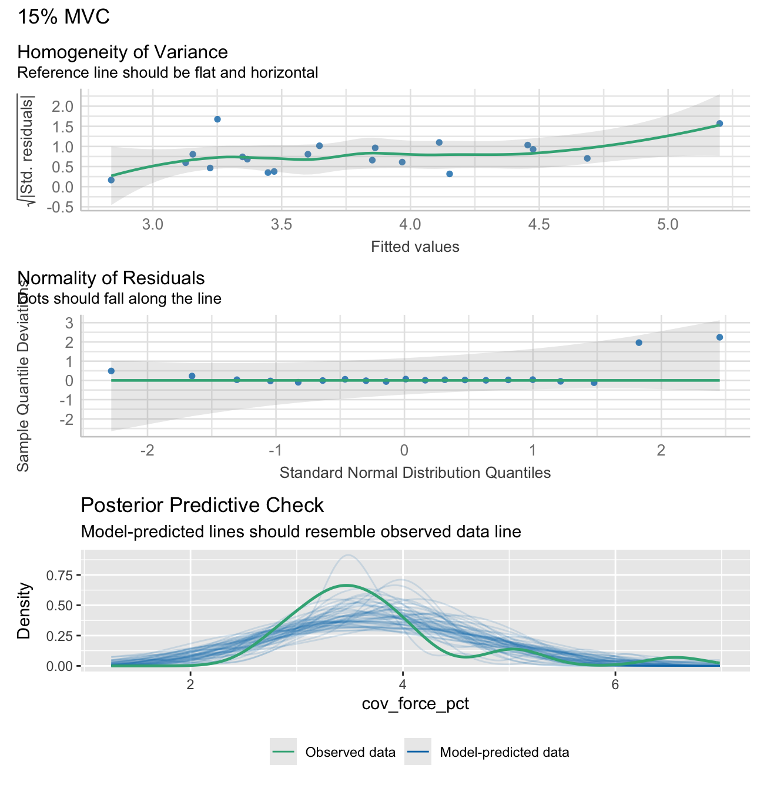
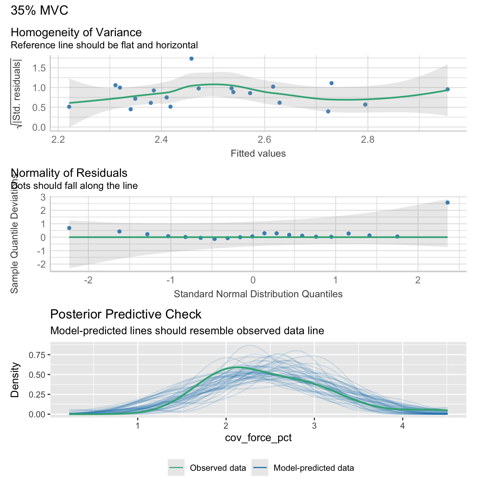
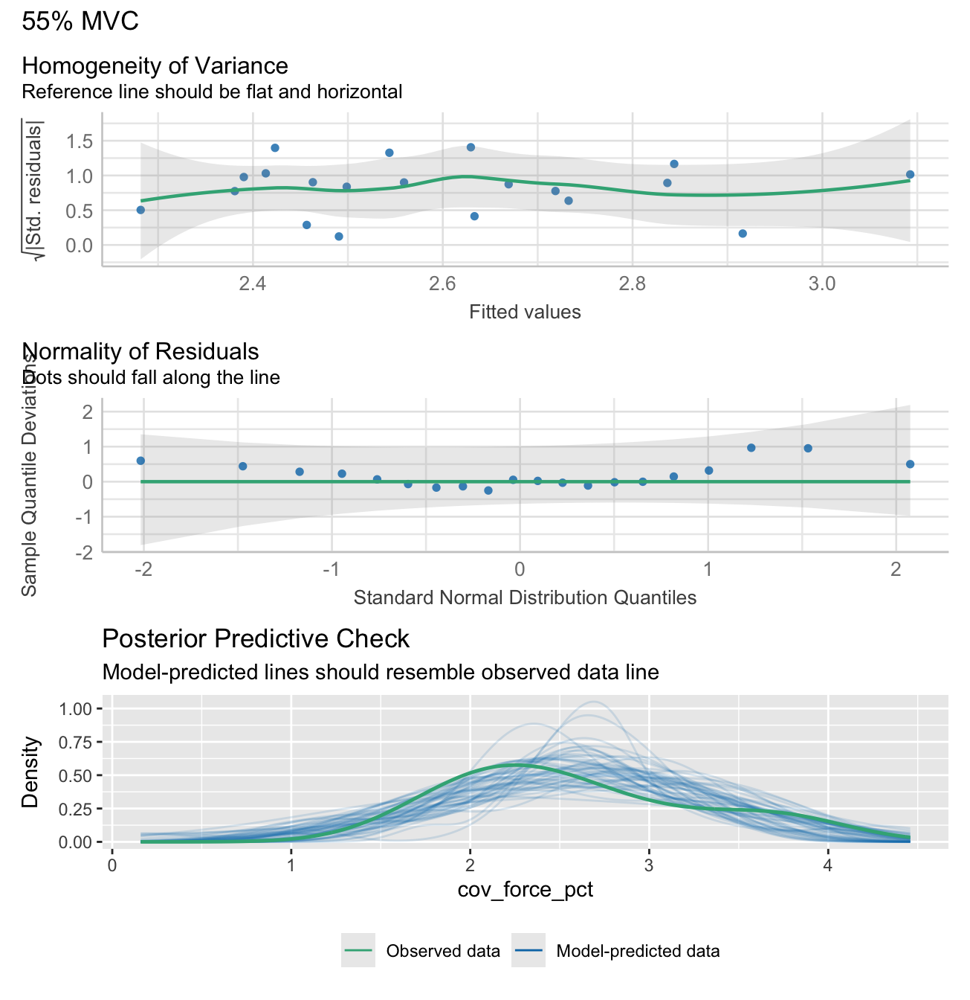

# Print the statistics data
stats_table_data <- stats_data %>% dplyr::select(-c(force_level, r2_text, formula_text))
kable(stats_table_data, row.names = FALSE) %>%
kable_styling(c("striped", "hover","condensed"))| force_level_label | r_squared | adj_r_squared | intercept | slope | slope_ci_lower | slope_ci_upper |
|---|---|---|---|---|---|---|
| 15% MVC | 0.45 | 0.42 | 7.39 | -0.03 | -0.05 | -0.01 |
| 35% MVC | 0.08 | 0.03 | 3.64 | -0.01 | -0.02 | 0.01 |
| 55% MVC | 0.10 | 0.05 | 3.85 | -0.01 | -0.03 | 0.01 |
| 70% MVC | 0.05 | -0.01 | 3.56 | -0.01 | -0.02 | 0.01 |
Plotting
Notes:
Female data points were tagged after their creation using an “F” in Inkscape.
Some styling and organisation of plots were done in InkScape after their creation. All data elements were kept identical to their output, only aesthetic changes were made.
Maximum force output plot
Show function to create maxmium and nornalised force plots
# FUNCTION: create_force_plot
# Creates raincloud plots for maximum force metrics.
# Inputs:
# - data: "demographic_anthropometric_force_data.csv".
# - ci_data: output from the function "calculate_group_boot_confint" in "calculate_bootstrap_confidence_intervals.R".
# - force_var: column name of the force variable used (i.e. "max_force" or "max_force_forearm_circumference_normalised").
# - y_label: Label of the y-axis (such as "Force Output (N)")
# - strip label: 90 degree rotated plot title in grey shaded box (such as "Gross Force").
# Outputs:
# - Force variable raincloud plots.
create_force_plot <- function(data, ci_data, force_var, y_label, strip_label) {
# Controls spacing of the rain/jitter plot elements
rain_height <- 0.07
# Add a dummy faceting variable to the data
data$facet_var <- strip_label
# Filter confidence interval data and add faceting variable
ci_data_filtered <- ci_data[ci_data$Testing_Variable == force_var, ]
ci_data_filtered$facet_var <- strip_label
# Ensure consistent ordering of groups in visualization
# 'strength' appears before 'dexterity' in the plot
data$testing_group <- factor(data$testing_group, levels = c("strength", "dexterity"))
# Begin building the plot with multiple layers.
ggplot() +
# Layer 1: Violin plots ("clouds").
# Shows distribution kernel density of the data (uses the introdataviz package).
introdataviz::geom_flat_violin(
data = data,
aes(x = "", y = .data[[force_var]], fill = testing_group),
trim = FALSE, # Don't trim the tails of the distribution
alpha = 0.9, # Slight transparency
show.legend = FALSE,
position = position_nudge(x = rain_height + 0.07) # Shift position slightly
) +
# Layer 2: Individual participant data points ("rain")
# Jittered points showing participant raw data
geom_point(
data = data,
aes(x = "", y = .data[[force_var]], colour = testing_group, shape = testing_group),
size = 2.2,
stroke = 0.5,
show.legend = FALSE, # Hide from legend since shown in violin plot
position = position_jitter(width = rain_height - 0.055) # Add random noise
) +
# Layer 3: Box plots
# Show quartiles and median
geom_boxplot(
data = data,
aes(x = "", y = .data[[force_var]], fill = testing_group),
width = 0.07,
show.legend = FALSE, # Hide from legend since shown in violin plot
outlier.shape = NA, # Hide outliers since shown in rain plot
position = position_dodgenudge(width = 0.075, x = -rain_height * 1.8) # Change position to be below "rain".
) +
# Layer 4: Confidence intervals
# Show mean and CI from bootstrap analysis positioned inside the "clouds"
geom_pointrange(
data = ci_data_filtered,
aes(x = "", y = Mean, ymin = Lower_CI, ymax = Upper_CI,
color = testing_group, shape = testing_group, fill = testing_group),
linewidth = 1,
size = 0.6,
show.legend = FALSE,
position = position_dodgenudge(x = rain_height + 0.14,
width = 0.05) # Position inside the "clouds".
) +
# Add faceting with placeholder variable
facet_grid(rows = vars(facet_var), switch = "y") +
# Configure scales and coordinate system
scale_x_discrete(name = "", expand = c(rain_height * 3, 0, 0, 0.7)) +
scale_y_continuous() +
coord_flip() + # Flip coordinates for horizontal layout
theme_bw() +
# Apply theme and styling which will be consistent across plots
theme(
panel.grid.major = element_blank(),
panel.grid.minor = element_blank(),
panel.background = element_blank(),
panel.border = element_blank(),
axis.line.y = element_blank(),
axis.line.x = element_line(color = "grey70", linewidth = 0.5),
axis.ticks.y = element_blank(),
axis.ticks.x = element_line(color = "grey70", linewidth = 0.5),
axis.title.y = element_blank(),
axis.text.y = element_blank(),
axis.title.x = element_text(face = "bold", size = 11),
axis.text.x = element_text(size = 9),
strip.background = element_rect(fill = "grey90", color = NA), # Remove the box around facet labels
legend.position = "none",
strip.text.y = element_text(
angle = 90,
face = "bold",
size = 12
)
) +
# Add labels and titles
labs(
y = y_label,
fill = "Testing Group"
) +
# Define consistent visual encoding for testing groups
scale_shape_manual(values = c("strength" = 21, "dexterity" = 24),
labels = c("strength" = "Strength-Trained", "dexterity" = "Dexterity-Trained")) +
scale_color_manual(values = c("strength" = "#fe9d5d", "dexterity" = "#365373"),
labels = c("strength" = "Strength-Trained", "dexterity" = "Dexterity-Trained")) +
scale_fill_manual(values = c("strength" = "#fe9d5d", "dexterity" = "#456990"),
labels = c("strength" = "Strength-Trained", "dexterity" = "Dexterity-Trained"))
}gross_force_plot <- create_force_plot(
demographic_anthropometric_force_data,
group_means_and_ci_boot,
"max_force",
"Force (N)",
"Gross Force"
)Forearm-circumference normalised force output plot
norm_force_plot <- create_force_plot(
demographic_anthropometric_force_data,
group_means_and_ci_boot,
"max_force_forearm_circumference_normalised",
"Force/unit forearm circumference (N/cm)",
"Normalized Force"
)Create coefficient of variation of steady force plot
Show function to create coefficient of variation of steady force plot
# FUNCTION: create_cov_force_plot
# Creates faceted plot that shows 95% CI and raw data points for foce steadiness (coefficient of varation of force)
# during the submaximal force trials
# Inputs:
# - data: "demographic_anthropometric_force_data.csv".
# - ci_data: output from the function "calculate_group_boot_confint" in "calculate_bootstrap_confidence_intervals.R".
# Outputs:
# - Force steadiness plot (coefficient of variation of force).
create_cov_force_plot <- function(data, ci_data) {
# Prepare coefficient of variation (COV) of force data for plotting
# Select relevant columns
plot_cov <- data %>%
dplyr::select(participant, testing_group, cov_force_15, cov_force_35, cov_force_55, cov_force_70)
# Convert wide format to long format for plotting
plot_cov_force_long <- plot_cov %>%
pivot_longer(cols = -c(testing_group, participant),
names_to = "Variable",
values_to = "Value") %>%
# Recode variable names and set factor levels for proper ordering
mutate(
# Convert numeric suffixes to percentage labels
Variable = factor(recode(Variable,
"cov_force_15" = "15%",
"cov_force_35" = "35%",
"cov_force_55" = "55%",
"cov_force_70" = "70%"),
levels = c("70%", "55%", "35%", "15%")), # Order from high to low
testing_group = factor(testing_group, levels = c("strength", "dexterity"))
)
# Similarly prepare confidence interval data
plot_cov_force_CI <- ci_data %>%
filter(Testing_Variable %in% c("cov_force_15", "cov_force_35", "cov_force_55", "cov_force_70")) %>%
mutate(
Variable = factor(recode(Testing_Variable,
"cov_force_15" = "15%",
"cov_force_35" = "35%",
"cov_force_55" = "55%",
"cov_force_70" = "70%"),
levels = c("70%", "55%", "35%", "15%")),
testing_group = factor(testing_group, levels = c("strength", "dexterity"))
)
# Create multi-panel plot
ggplot() +
# Layer 1: Individual participant data points with jitter.
geom_jitter(data = plot_cov_force_long,
aes(x = Value, y = testing_group, color = testing_group, shape = testing_group),
size = 2.5,
stroke = 0.5,
position = position_jitterdodge(jitter.width = 0.05, dodge.width = 0.5),
show.legend = FALSE) +
# Layer 2: Bootstrapped mean and 95% confidence intervals
geom_pointrange(data = plot_cov_force_CI,
aes(x = Mean, y = testing_group,
xmin = Lower_CI, xmax = Upper_CI,
color = testing_group, shape = testing_group,
fill = testing_group),
size = 1,
linewidth = 1.7,
position = position_dodge(width = 0.5)) +
# Create separate panels for each force level
facet_grid(rows = vars(Variable), scales = "free_y", switch = "y") +
# Apply theme and styling which will be consistent across plots
theme_bw() +
theme(
panel.grid.major = element_blank(),
panel.grid.minor = element_blank(),
panel.border = element_rect(colour = "grey70"),
legend.position = "bottom",
legend.title = element_text(size = 9, face = "bold"),
legend.background = element_blank(),
legend.text = element_text(size = 9),
axis.title.y = element_text(angle = 90, size = 12, face = "bold", hjust = 0.5),
axis.text.y = element_blank(),
axis.ticks.y = element_blank(),
axis.line.y = element_blank(),
strip.text.y = element_text(angle = 90, size = 11, face = "bold"),
axis.title.x = element_text(size = 11, face = "bold", margin = margin(t = 10)),
axis.text.x = element_text(size = 10, face = "bold"),
axis.line.x = element_line(size = 0.3, colour = "grey80"),
strip.background = element_rect(fill = "grey90", color = NA)
) +
# Add labels and configure scales
labs(x = "COV",
y = "Percentage of MVC",
fill = "Testing Group",
color = "Testing Group",
shape = "Testing Group") +
scale_x_continuous(labels = scales::percent) + # Format x-axis as force level percentages
# Apply consistent visual encoding for testing groups
scale_shape_manual(values = c("strength" = 21, "dexterity" = 24),
labels = c("strength" = "Strength-Trained", "dexterity" = "Dexterity-Trained")) +
scale_color_manual(values = c("strength" = "#fe9d5d", "dexterity" = "#456990"),
labels = c("strength" = "Strength-Trained", "dexterity" = "Dexterity-Trained")) +
scale_fill_manual(values = c("strength" = "#fe9d5d", "dexterity" = "#456990"),
labels = c("strength" = "Strength-Trained", "dexterity" = "Dexterity-Trained"))
}cov_plot <- create_cov_force_plot(
demographic_anthropometric_force_data,
group_means_and_ci_boot
)Linear regression plots
Show functions to calculate linear regression analyses
# FUNCTION: create_lm_plots
# Calculates
# Inputs:
# - long_data (from linear regression function above)
# - stats_data (from linear regression function above)
# Outputs:
# - Plot of lm for each force level.
create_lm_plots <- function(long_data, stats_data) {
p <- ggplot(long_data, aes(x = max_force, y = cov_force_pct, color = testing_group, shape = testing_group)) +
# Regression line
geom_smooth(method = "lm", formula = y ~ x, se = TRUE, color = "black", linewidth = 0.8,
fill = "grey90", alpha = 1,
inherit.aes = FALSE, aes(x = max_force, y = cov_force_pct)) +
# Participant data points
geom_point(size = 2, stroke = 0.6) +
# R² text
geom_text(data = stats_data,
aes(x = Inf, y = Inf, label = r2_text),
hjust = 1.1, vjust = 3.7,
size = 3.2, color = "black",
inherit.aes = FALSE) +
# Slope text
geom_text(data = stats_data,
aes(x = Inf, y = Inf, label = formula_text),
hjust = 1.1, vjust = 1.7,
size = 3.2, color = "black",
inherit.aes = FALSE) +
facet_grid(. ~ force_level_label, scales = "free_x") +
labs(x = "Max Force (N)", y = "COV Force (%)") +
scale_y_continuous(breaks = scales::pretty_breaks(n = 3),
labels = function(x) paste0(x, "%")) +
scale_shape_manual(values = c("strength" = 21, "dexterity" = 24),
labels = c("strength" = "Strength-Trained",
"dexterity" = "Dexterity-Trained")) +
coord_cartesian(ylim = c(NA, max(long_data$cov_force_pct, na.rm = TRUE) * 1.05)) +
scale_color_manual(
name = "Testing Group",
values = c("strength" = "#fe9d5d", "dexterity" = "#456990"),
labels = c("strength" = "Strength-Trained", "dexterity" = "Dexterity-Trained")
) +
theme_bw() +
theme(
panel.border = element_rect(color = "grey70", fill = NA, linewidth = 0.5),
panel.grid.major = element_blank(),
panel.grid.minor = element_blank(),
panel.background = element_blank(),
strip.background = element_rect(color = NA, fill = "grey90"),
strip.text = element_text(face = "bold", size = 12),
strip.placement = "outside",
axis.title.x = element_text(face = "bold", margin = margin(t = 10)),
axis.text.x = element_text(size = 9),
axis.title.y = element_text(face = "bold"),
axis.text.y = element_text(size = 9),
axis.ticks = element_line(color = "grey70", linewidth = 0.3),
legend.position = "none"
)
return(p)
}lm_plot <- create_lm_plots(long_data, stats_data)Combine plots into final paneled plot
combined_plot <- (gross_force_plot| norm_force_plot) / (cov_plot) / (lm_plot) +
plot_layout(
guides = 'collect', # Collect all legends
heights = c(0.3, 0.6, 0.2) # Adjust height proportions
) +
plot_annotation(tag_levels = 'A',
theme = theme(legend.position = "bottom")) &
theme(plot.tag = element_text(face = "bold"),
plot.tag.position = c(0.01, 1.01))
combined_plot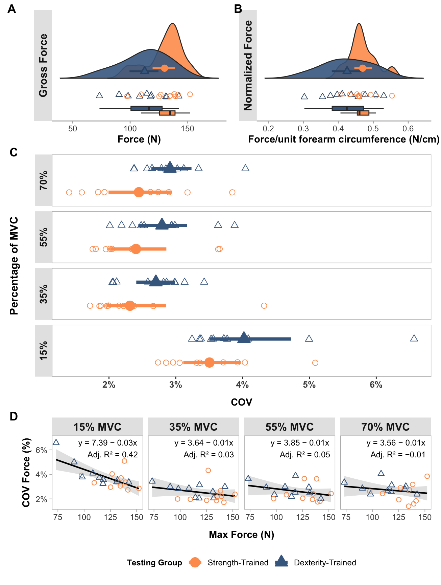
Motor unit data analyses
mu_data <- read_csv("mu_data.csv",
col_types = cols(testing_group = col_factor(levels = c("dexterity",
"strength")), force_level = col_factor(levels = c("15",
"35", "55", "70")), trial = col_factor(levels = c("1",
"2", "3")), muscle = col_factor(levels = c("apb",
"fds"))))Motor unit table
Show functions to create table of average MUs per participant
# FUNCTION: create_MU_summary_table
# Calculates
# Inputs:
# - mu_data
# Outputs:
# - Table of identified MUs across the three trials, per participant and for each force level.
create_MU_summary_table <- function(mu_data) {
# Create summary table
summary_table <- mu_data %>%
group_by(force_level, muscle, testing_group) %>%
summarize(
n_participants = n_distinct(participant),
avg_motor_units = n() / n_distinct(participant),
.groups = 'drop'
) %>%
# Reshape to have separate columns for each measure
pivot_wider(
names_from = c(testing_group, muscle),
values_from = c(n_participants, avg_motor_units),
names_sep = "_"
)
# Reorder columns to group by testing_group first
desired_order <- c("force_level")
for(testing_group in c("strength", "dexterity")) {
for(muscle in c("apb", "fds")) {
desired_order <- c(desired_order,
paste0("n_participants_", testing_group, "_", muscle),
paste0("avg_motor_units_", testing_group, "_", muscle))
}
}
summary_table <- summary_table %>%
dplyr::select(all_of(desired_order))
# Create GT table
final_table <- summary_table %>%
gt()
# First add the lower level (muscle) spanners
for(testing_group in c("strength", "dexterity")) {
# Add APB spanner
apb_cols <- c(
paste0("n_participants_", testing_group, "_apb"),
paste0("avg_motor_units_", testing_group, "_apb")
)
final_table <- final_table %>%
tab_spanner(
label = "APB",
columns = all_of(apb_cols),
id = paste0(testing_group, "_apb")
)
# Add FDS spanner
fds_cols <- c(
paste0("n_participants_", testing_group, "_fds"),
paste0("avg_motor_units_", testing_group, "_fds")
)
final_table <- final_table %>%
tab_spanner(
label = "FDS",
columns = all_of(fds_cols),
id = paste0(testing_group, "_fds")
)
}
# Then add the top level (testing_group) spanners
# Strength-trained columns
strength_cols <- c(
"n_participants_strength_apb",
"avg_motor_units_strength_apb",
"n_participants_strength_fds",
"avg_motor_units_strength_fds"
)
final_table <- final_table %>%
tab_spanner(
label = "Strength-trained",
columns = all_of(strength_cols),
id = "strength"
)
# Dexterity-trained columns
dexterity_cols <- c(
"n_participants_dexterity_apb",
"avg_motor_units_dexterity_apb",
"n_participants_dexterity_fds",
"avg_motor_units_dexterity_fds"
)
final_table <- final_table %>%
tab_spanner(
label = "Dexterity-trained",
columns = all_of(dexterity_cols),
id = "dexterity"
)
# Add column labels
col_labels <- list(force_level = "Force Level")
# Define column labels systematically
for(testing_group in c("strength", "dexterity")) {
for(muscle_name in c("apb", "fds")) {
col_labels[[paste0("n_participants_", testing_group, "_", muscle_name)]] <- "N"
col_labels[[paste0("avg_motor_units_", testing_group, "_", muscle_name)]] <- "No. MUs"
}
}
# Apply formatting
final_table <- final_table %>%
tab_options(
column_labels.font.weight = "bold",
# Table borders
table.border.top.color = "black",
table.border.top.width = px(1.5),
table.border.bottom.color = "black",
table.border.bottom.width = px(1.5),
# Column label borders
column_labels.border.top.color = "black",
column_labels.border.top.width = px(1.5),
column_labels.border.bottom.color = "black",
column_labels.border.bottom.width = px(1.5),
# Row group borders
row_group.border.top.color = "black",
row_group.border.top.width = px(1.5),
row_group.border.bottom.color = "black",
row_group.border.bottom.width = px(1.5),
# Body borders
table_body.border.top.color = "black",
table_body.border.top.width = px(1.5),
table_body.border.bottom.color = "black",
table_body.border.bottom.width = px(1.5),
# Spanner borders
heading.border.bottom.color = "black",
heading.border.bottom.width = px(1.5)
) %>%
tab_style(
style = list(
cell_text(weight = "bold"),
cell_borders(
sides = c("top", "bottom"),
color = "black",
weight = px(1.5)
)
),
locations = cells_column_spanners()
) %>%
# Add borders between column labels
tab_style(
style = cell_borders(
sides = c("top", "bottom"),
color = "black",
weight = px(1.5)
),
locations = cells_column_labels()
) %>%
# Add borders to data cells - finer and lighter grey
tab_style(
style = cell_borders(
sides = c("top", "bottom"),
color = "#D3D3D3",
weight = px(0.5)
),
locations = cells_body()
) %>%
# Keep the bottom border of the last row thick and black
tab_style(
style = cell_borders(
sides = "bottom",
color = "black",
weight = px(1.5)
),
locations = cells_body(
rows = nrow(summary_table)
)
) %>%
# Make force_level values bold
tab_style(
style = cell_text(weight = "bold"),
locations = cells_body(columns = force_level)
) %>%
cols_label(!!!col_labels) %>%
# Transform text to add %
text_transform(
locations = cells_body(columns = force_level),
fn = function(x) paste0(x, "%")
) %>%
fmt_number(
columns = contains("avg_motor_units"),
decimals = 1
) %>%
# Center align numeric columns
cols_align(
align = "center",
columns = -force_level
) %>%
cols_align(
align = "left",
columns = force_level
) %>%
opt_horizontal_padding(scale = 2.6)
# Return the table
return(final_table)
}final_table <- create_MU_summary_table(mu_data)
final_table| Strength-trained | Dexterity-trained | |||||||
|---|---|---|---|---|---|---|---|---|
| Force Level | APB | FDS | APB | FDS | ||||
| N | No. MUs | N | No. MUs | N | No. MUs | N | No. MUs | |
| 15% | 6 | 4.3 | 3 | 3.3 | 9 | 4.0 | 4 | 2.0 |
| 35% | 10 | 8.3 | 5 | 7.2 | 10 | 9.7 | 5 | 4.6 |
| 55% | 10 | 18.1 | 10 | 8.1 | 10 | 15.9 | 7 | 7.0 |
| 70% | 9 | 18.1 | 9 | 11.9 | 10 | 19.1 | 9 | 6.9 |
Linear mixed effects model
This is a linear mixed effects model of average firing rate.
The fixed effects, which are all interaction terms include:
Testing group.
Force level.
Muscle being tested.
The random effects is:
Participant.
Firing (or recruitment) threshold.
model_participant_firing_threhsold <- lmer(avg_firing_rate
~ testing_group
* force_level
* muscle
+(1|participant)
+ (1|firing_threshold),
data=mu_data
)
summary(model_participant_firing_threhsold)Linear mixed model fit by REML. t-tests use Satterthwaite's method [
lmerModLmerTest]
Formula: avg_firing_rate ~ testing_group * force_level * muscle + (1 |
participant) + (1 | firing_threshold)
Data: mu_data
REML criterion at convergence: 8652.4
Scaled residuals:
Min 1Q Median 3Q Max
-2.18965 -0.46806 -0.00462 0.50564 2.68590
Random effects:
Groups Name Variance Std.Dev.
firing_threshold (Intercept) 19.387 4.403
participant (Intercept) 2.378 1.542
Residual 24.558 4.956
Number of obs: 1312, groups: firing_threshold, 1233; participant, 20
Fixed effects:
Estimate Std. Error df
(Intercept) 8.9756 1.2206 306.4061
testing_groupstrength 0.5606 1.8517 380.8512
force_level35 8.7190 1.3141 1294.7817
force_level55 10.8926 1.2344 1289.9666
force_level70 12.8065 1.2230 1289.0139
musclefds -3.5144 2.6246 1279.3408
testing_groupstrength:force_level35 -6.0901 2.0046 1295.7599
testing_groupstrength:force_level55 -2.5711 1.8632 1289.5843
testing_groupstrength:force_level70 -1.3839 1.8591 1287.8217
testing_groupstrength:musclefds -0.6201 3.6155 1294.8645
force_level35:musclefds -9.4995 3.0297 1283.6760
force_level55:musclefds -8.2725 2.8193 1268.3432
force_level70:musclefds -9.2254 2.8046 1265.5318
testing_groupstrength:force_level35:musclefds 8.8483 4.1451 1293.0045
testing_groupstrength:force_level55:musclefds 3.7329 3.8653 1291.0599
testing_groupstrength:force_level70:musclefds 3.1491 3.8484 1291.0855
t value Pr(>|t|)
(Intercept) 7.353 1.78e-12 ***
testing_groupstrength 0.303 0.76226
force_level35 6.635 4.75e-11 ***
force_level55 8.824 < 2e-16 ***
force_level70 10.472 < 2e-16 ***
musclefds -1.339 0.18080
testing_groupstrength:force_level35 -3.038 0.00243 **
testing_groupstrength:force_level55 -1.380 0.16784
testing_groupstrength:force_level70 -0.744 0.45680
testing_groupstrength:musclefds -0.172 0.86385
force_level35:musclefds -3.135 0.00175 **
force_level55:musclefds -2.934 0.00340 **
force_level70:musclefds -3.289 0.00103 **
testing_groupstrength:force_level35:musclefds 2.135 0.03298 *
testing_groupstrength:force_level55:musclefds 0.966 0.33436
testing_groupstrength:force_level70:musclefds 0.818 0.41335
---
Signif. codes: 0 '***' 0.001 '**' 0.01 '*' 0.05 '.' 0.1 ' ' 1Check model assumptions and fit:
check1 <- plot(check_heteroscedasticity(model_participant_firing_threhsold))
check2 <- plot(check_normality(model_participant_firing_threhsold))
check3 <- plot(check_predictions(model_participant_firing_threhsold))
check1 + check2 + check3 + plot_layout(ncol = 1, guides = "collect") &
theme(legend.position = "bottom")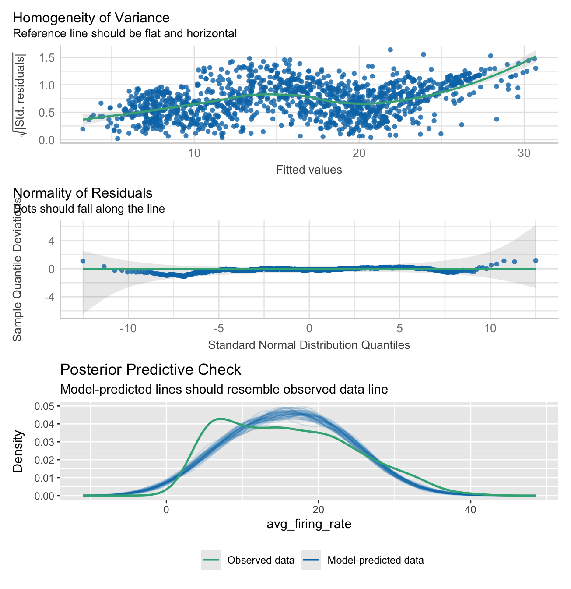
model_performance(model_participant_firing_threhsold)# Indices of model performance
AIC | AICc | BIC | R2 (cond.) | R2 (marg.) | ICC | RMSE | Sigma
--------------------------------------------------------------------------------
8690.351 | 8690.939 | 8788.758 | 0.674 | 0.385 | 0.470 | 3.719 | 4.956Average firing rate calculations using estimated marginal means
Here we calculate the average firing rate estimated marginal means and 95% confidence intervals. These were calculated for each testing group and muscle, conditioned on force level.
emm <- emmeans(model_participant_firing_threhsold,
pairwise
~ testing_group
| force_level
+ muscle,
adjust = 'BH',
infer = T)
emm$emmeans
force_level = 15, muscle = apb:
testing_group emmean SE df lower.CL upper.CL t.ratio p.value
dexterity 8.98 1.224 312.3 6.568 11.38 7.335 <.0001
strength 9.54 1.395 462.1 6.794 12.28 6.834 <.0001
force_level = 35, muscle = apb:
testing_group emmean SE df lower.CL upper.CL t.ratio p.value
dexterity 17.69 0.859 86.2 15.986 19.40 20.589 <.0001
strength 12.17 0.901 107.5 10.380 13.95 13.507 <.0001
force_level = 55, muscle = apb:
testing_group emmean SE df lower.CL upper.CL t.ratio p.value
dexterity 19.87 0.736 48.9 18.389 21.35 26.991 <.0001
strength 17.86 0.696 41.4 16.452 19.26 25.653 <.0001
force_level = 70, muscle = apb:
testing_group emmean SE df lower.CL upper.CL t.ratio p.value
dexterity 21.78 0.704 41.4 20.362 23.20 30.956 <.0001
strength 20.96 0.724 46.9 19.503 22.41 28.966 <.0001
force_level = 15, muscle = fds:
testing_group emmean SE df lower.CL upper.CL t.ratio p.value
dexterity 5.46 2.424 1088.5 0.705 10.22 2.253 0.0245
strength 5.40 2.165 987.6 1.154 9.65 2.495 0.0127
force_level = 35, muscle = fds:
testing_group emmean SE df lower.CL upper.CL t.ratio p.value
dexterity 4.68 1.502 500.3 1.730 7.63 3.117 0.0019
strength 7.38 1.252 308.0 4.916 9.84 5.894 <.0001
force_level = 55, muscle = fds:
testing_group emmean SE df lower.CL upper.CL t.ratio p.value
dexterity 8.08 1.120 204.2 5.873 10.29 7.214 <.0001
strength 9.18 0.894 106.0 7.412 10.96 10.277 <.0001
force_level = 70, muscle = fds:
testing_group emmean SE df lower.CL upper.CL t.ratio p.value
dexterity 9.04 0.996 157.4 7.075 11.01 9.078 <.0001
strength 10.75 0.829 78.0 9.098 12.40 12.967 <.0001
Degrees-of-freedom method: kenward-roger
Confidence level used: 0.95
$contrasts
force_level = 15, muscle = apb:
contrast estimate SE df lower.CL upper.CL t.ratio p.value
dexterity - strength -0.5606 1.86 387.6 -4.2095 3.088 -0.302 0.7628
force_level = 35, muscle = apb:
contrast estimate SE df lower.CL upper.CL t.ratio p.value
dexterity - strength 5.5296 1.24 96.5 3.0587 8.000 4.442 <.0001
force_level = 55, muscle = apb:
contrast estimate SE df lower.CL upper.CL t.ratio p.value
dexterity - strength 2.0105 1.01 45.1 -0.0299 4.051 1.984 0.0533
force_level = 70, muscle = apb:
contrast estimate SE df lower.CL upper.CL t.ratio p.value
dexterity - strength 0.8233 1.01 44.1 -1.2106 2.857 0.816 0.4190
force_level = 15, muscle = fds:
contrast estimate SE df lower.CL upper.CL t.ratio p.value
dexterity - strength 0.0595 3.25 1062.0 -6.3178 6.437 0.018 0.9854
force_level = 35, muscle = fds:
contrast estimate SE df lower.CL upper.CL t.ratio p.value
dexterity - strength -2.6986 1.96 407.0 -6.5422 1.145 -1.380 0.1683
force_level = 55, muscle = fds:
contrast estimate SE df lower.CL upper.CL t.ratio p.value
dexterity - strength -1.1023 1.43 154.7 -3.9330 1.728 -0.769 0.4429
force_level = 70, muscle = fds:
contrast estimate SE df lower.CL upper.CL t.ratio p.value
dexterity - strength -1.7057 1.30 114.9 -4.2725 0.861 -1.316 0.1907
Degrees-of-freedom method: kenward-roger
Confidence level used: 0.95 Plotting
Here the average firing rate is plotted, which each muscle in its own facet.
NOTE:
15% MVC in the FDS muscle was not included in the analysis due to the low number of identified motor units.
Some styling and organisation of plots were done in InkScape after their creation. All data elements were kept identical to their output, only aesthetic changes were made.
Show function for plotting
# FUNCTION: create_emmeans_plot
# Creates geom_point plot for the estimated marginal mean motor unit firing rate
# at each force level and for each muscle.
# Inputs:
# - data: output from the EMmeans function used for calculation of estimated marginal means in linear
# mixed effects models
# Outputs:
# - Plot of EMM average motor unit firing rate faceted by muscle.
create_emmeans_plot <- function(emm) {
# Process estimated marginal means data:
# - Rename columns for clarity
# - Convert force levels to numeric
# - Format group names
# - Filter to include only specific force levels for each muscle
processed_emm_data <- as.data.frame(emm$emmeans) %>%
rename(Mean = emmean,
Lower_CI = lower.CL,
Upper_CI = upper.CL) %>%
mutate(
force_level = as.numeric(gsub("MVC", "", as.character(force_level))),
muscle = case_when(
muscle == "apb" ~ "Abductor Pollicis Brevis",
muscle == "fds" ~ "Flexor Digitorum Superficialis",
TRUE ~ muscle
),
testing_group = case_when(
testing_group == "strength" ~ "Strength-Trained",
testing_group == "dexterity" ~ "Dexterity-Trained",
TRUE ~ testing_group
)
) %>%
# Filter data to include:
# - APB muscle: 15%, 35%, 55%, 70% force levels
# - FDS muscle: 35%, 55%, 70% force levels
filter((muscle == "Abductor Pollicis Brevis" & force_level %in% c(15, 35, 55, 70)) |
(muscle == "Flexor Digitorum Superficialis" & force_level %in% c(35, 55, 70)))
# Create plot showing estimated means and confidence intervals
ggplot(processed_emm_data, aes(x = force_level, color = testing_group)) +
# Add fine lines connecting means within each group
geom_line(aes(y = Mean, group = testing_group, linetype = testing_group),
linewidth = 0.2, position = position_dodge(width = 2)) +
# Add points with error bars showing confidence intervals
geom_pointrange(aes(y = Mean, ymin = Lower_CI, ymax = Upper_CI,
shape = testing_group, fill = testing_group),
linewidth = 1.5, size = 0.7, position = position_dodge(width = 2)) +
# Add labels and titles
labs(
x = "Percentage of MVC",
y = "EMM Firing Rate",
color = "Testing Group",
shape = "Testing Group",
fill = "Testing Group",
linetype = "Testing Group"
) +
# Apply black and white theme and customize appearance
theme_bw() +
theme(
panel.grid.major = element_blank(),
panel.grid.minor = element_blank(),
panel.border = element_rect(colour = "grey70"),
legend.position = "bottom",
strip.text = element_text(size = 12, face = "bold"),
axis.title.x = element_text(size = 11, face = "bold", margin = margin(t = 15)),
axis.text.x = element_text(size = 9, face = "bold"),
axis.line.x = element_line(size = 0.3, colour = "grey80"),
axis.title.y.left = element_text(size = 11, face = "bold", margin = margin(r = 10)),
axis.text.y = element_text(size = 9),
title = element_blank(),
strip.background = element_rect(fill = "grey90", color = NA) ,
legend.title = element_text(size = 9, face = "bold"),
legend.text = element_text(size = 9)
) +
# Configure x-axis scale and labels
scale_x_continuous(
limits = c(10, 75),
labels = scales::percent_format(scale = 1),
breaks = c(15, 35, 55, 70)
) +
# Set custom shapes, colors, fills and line types for groups
scale_shape_manual(values = c("Strength-Trained" = 21, "Dexterity-Trained" = 24)) +
scale_color_manual(values = c("Strength-Trained" = "#fe9d5d", "Dexterity-Trained" = "#456990")) +
scale_fill_manual(values = c("Strength-Trained" = "#fe9d5d", "Dexterity-Trained" = "#456990")) +
scale_linetype_manual(values = c("Strength-Trained" = 5, "Dexterity-Trained" = 1)) +
# Create separate panels for each muscle
facet_wrap(~ muscle)
}mu_avg_firing_rate_plot <- create_emmeans_plot(emm)
mu_avg_firing_rate_plot
Coherence plotting
# Load pooled coherence data
pooled_coherence_data <- read_csv("pooled_coherence_data.csv",
col_types = cols(
.default = col_double(),
# Specify all chi2_sig columns as logical
strength_chi2_sig_15 = col_logical(),
strength_chi2_sig_35 = col_logical(),
strength_chi2_sig_55 = col_logical(),
strength_chi2_sig_70 = col_logical(),
dexterity_chi2_sig_15 = col_logical(),
dexterity_chi2_sig_35 = col_logical(),
dexterity_chi2_sig_55 = col_logical(),
dexterity_chi2_sig_70 = col_logical()
),
show_col_types = FALSE)
# Load coherence histogram data
coherence_histogram_data <- read_csv("histogram_coherence_data.csv", show_col_types = FALSE)
# Load comparison of coherence data
comparison_of_coherence_data <- read_csv("comparison_of_coherence_data.csv", show_col_types = FALSE)Pooled coherence plots
Show function for plotting pooled coherence plots
# FUNCTION: create_faceted_coherence_plots
# Creates NeuroSpec-style pooled coherence plots in a faceted layout
# Inputs:
# - data: pooled coherence data
# Outputs:
# - 2x4 faceted plot with strength/dexterity on rows and force levels on columns
create_faceted_coherence_plots <- function(data) {
# Prepare data in long format for faceting
force_levels <- c("15", "35", "55", "70")
testing_groups <- c("strength", "dexterity")
# Create empty list to store reshaped data
plot_data_list <- list()
# Reshape data for each combination
for (group in testing_groups) {
for (force in force_levels) {
# Construct column names dynamically
coh_col <- paste0(group, "_coh_", force)
ci_col <- paste0(group, "_ci_", force)
chi2_sig_col <- paste0(group, "_chi2_sig_", force)
# Create subset with necessary columns
temp_data <- data[, c("freq", coh_col, ci_col, chi2_sig_col)]
names(temp_data) <- c("freq", "coherence", "ci", "chi2_sig")
temp_data$testing_group <- group
temp_data$force_level <- force
plot_data_list <- append(plot_data_list, list(temp_data))
}
}
# Combine all data
long_data <- do.call(rbind, plot_data_list)
# Convert to factors for proper ordering
long_data$testing_group <- factor(long_data$testing_group,
levels = c("strength", "dexterity"))
long_data$force_level <- factor(long_data$force_level,
levels = c("15", "35", "55", "70"))
# Create significant points subset
sig_data <- long_data[long_data$chi2_sig == TRUE, ]
# Create the faceted plot
p <- ggplot(long_data, aes(x = freq)) +
# Add shaded frequency bands
annotate("rect", xmin = 8, xmax = 16, ymin = 0, ymax = 0.04,
fill = "grey90", alpha = 0.5) +
annotate("rect", xmin = 16, xmax = 30, ymin = 0, ymax = 0.04,
fill = "grey75", alpha = 0.5) +
annotate("rect", xmin = 30, xmax = 60, ymin = 0, ymax = 0.04,
fill = "grey60", alpha = 0.5) +
# Add symbols (will appear in each facet)
annotate("text", x = 12, y = 0.035, label = "\u03B1", size = 10/.pt) +
annotate("text", x = 22, y = 0.035, label = "\u03B2", size = 10/.pt) +
annotate("text", x = 45, y = 0.035, label = "\u03B3", size = 10/.pt) +
# Add coherence line with color
geom_line(aes(y = coherence, color = testing_group), linewidth = 0.8) +
# Add confidence interval as dashed line
geom_hline(aes(yintercept = ci), linetype = "dashed", linewidth = 0.4) +
# Add red X marks for significant chi2 points
geom_point(data = sig_data,
aes(y = coherence),
shape = 4, # X shape
color = "red",
size = 2) +
# Set axis limits and breaks
scale_x_continuous(
limits = c(0, 65),
breaks = c(0, 10, 20, 30, 40, 50, 60),
name = "Frequency (Hz)",
expand = expansion(mult = c(0, 0.05))
) +
scale_y_continuous(
limits = c(0, 0.04),
breaks = c(0, 0.01, 0.02, 0.03, 0.04),
name = "Coherence Estimate",
expand = expansion(mult = c(0, 0.05))
) +
# Add color scale
scale_color_manual(
values = c("strength" = "#fe9d5d", "dexterity" = "#456990"),
labels = c("strength" = "Strength-Trained", "dexterity" = "Dexterity-Trained")
) +
# Create facets: rows = testing groups, columns = force levels
facet_grid(testing_group ~ force_level,
labeller = labeller(
testing_group = c("strength" = "Strength-Trained",
"dexterity" = "Dexterity-Trained"),
force_level = function(x) paste0(x, "% MVC")
),
switch = "y") + # Move row strip labels to the left
# Theme modifications
theme_bw() +
theme(
panel.grid.major = element_blank(),
panel.grid.minor = element_blank(),
panel.background = element_blank(),
strip.background = element_rect(color = NA),
strip.text.y = element_blank(),
strip.text.x = element_text(face = "bold", size = 12),
strip.placement = "none",
panel.spacing.y = unit(0.8, "lines"),
panel.border = element_rect(color = "grey50", fill = NA, linewidth = 0.5),
axis.ticks = element_line(color = "grey30", linewidth = 0.3),
# Change axis fonts
axis.title.x = element_text(margin = margin(t = 11, r = 0, b = 0, l = 0),
face = "bold"),
axis.text.x = element_text(size = 9),
axis.title.y = element_text(face = "bold"),
axis.text.y = element_text(size = 9),
# No legend since groups are faceted
legend.position = "none",
)
return(p)
}# Create the faceted coherence plot
faceted_coherence_plot <- create_faceted_coherence_plots(pooled_coherence_data)Pooled histogram plots
Show function for plotting pooled coherence histogram plots
# FUNCTION: create_faceted_histogram_plots
# Creates histogram plots of percentage of trials with significant coherence
# Inputs:
# - data: coherence histogram data
# Outputs:
# - 2x4 faceted plot with strength/dexterity on rows and force levels on columns
create_faceted_histogram_plots <- function(data) {
# Prepare data in long format for faceting
force_levels <- c("15", "35", "55", "70")
testing_groups <- c("strength", "dexterity")
# Create empty list to store reshaped data
plot_data_list <- list()
# Reshape data for each combination
for (group in testing_groups) {
for (force in force_levels) {
# Construct column name dynamically
hist_col <- paste0(group, "_MVC", force)
# Create subset with necessary columns
temp_data <- data[, c("freq", hist_col)]
names(temp_data) <- c("freq", "value")
temp_data$value <- temp_data$value * 100 # Convert to percentage
temp_data$testing_group <- group
temp_data$force_level <- force
plot_data_list <- append(plot_data_list, list(temp_data))
}
}
# Combine all data
long_data <- do.call(rbind, plot_data_list)
# Convert to factors for proper ordering
long_data$testing_group <- factor(long_data$testing_group,
levels = c("strength", "dexterity"))
long_data$force_level <- factor(long_data$force_level,
levels = c("15", "35", "55", "70"))
# Create the faceted plot
p <- ggplot(long_data, aes(x = freq)) +
# Add shaded frequency bands
annotate("rect", xmin = 8, xmax = 16, ymin = 0, ymax = 25,
fill = "grey90", alpha = 0.5) +
annotate("rect", xmin = 16, xmax = 30, ymin = 0, ymax = 25,
fill = "grey75", alpha = 0.5) +
annotate("rect", xmin = 30, xmax = 60, ymin = 0, ymax = 25,
fill = "grey60", alpha = 0.5) +
# Add symbols (will appear in each facet)
annotate("text", x = 12, y = 22, label = "\u03B1", size = 10/.pt) +
annotate("text", x = 23.5, y = 22, label = "\u03B2", size = 10/.pt) +
annotate("text", x = 45, y = 22, label = "\u03B3", size = 10/.pt) +
# Add histogram bars
geom_col(aes(y = value, fill = testing_group), width = 1.3) +
# Set axis limits and breaks
scale_x_continuous(
limits = c(0, 65),
breaks = seq(0, 60, by = 10),
name = "Frequency (Hz)",
expand = expansion(mult = c(0, 0.05))
) +
scale_y_continuous(
limits = c(0, 25),
breaks = c(0, 5, 10, 15, 20, 25),
labels = function(x) paste0(x, "%"),
name = "% of Trials",
expand = expansion(mult = c(0, 0.05))
) +
# Add fill scale
scale_fill_manual(
values = c("strength" = "#fe9d5d", "dexterity" = "#456990"),
labels = c("strength" = "Strength-Trained", "dexterity" = "Dexterity-Trained")
) +
# Create facets: rows = testing groups, columns = force levels
facet_grid(testing_group ~ force_level,
labeller = labeller(
testing_group = c("strength" = "Strength-Trained",
"dexterity" = "Dexterity-Trained"),
force_level = function(x) paste0(x, "% MVC")
),
switch = "y") + # Move row strip labels to the left
# Theme modifications
theme_bw() +
theme(
panel.grid.major = element_blank(),
panel.grid.minor = element_blank(),
panel.background = element_blank(),
strip.background = element_rect(color = NA),
strip.text.y = element_blank(),
strip.text.x = element_text(face = "bold", size = 12),
strip.placement = "none",
panel.spacing.y = unit(0.8, "lines"),
panel.border = element_rect(color = "grey50", fill = NA, linewidth = 0.5),
axis.ticks = element_line(color = "grey30", linewidth = 0.3),
# Change axis fonts
axis.title.x = element_text(margin = margin(t = 11, r = 0, b = 0, l = 0),
face = "bold"),
axis.text.x = element_text(size=9),
axis.title.y = element_text(face = "bold"),
axis.text.y = element_text(size=9),
# No legend since groups are faceted
legend.position = "none"
)
return(p)
}# Create the faceted histogram plot
faceted_histogram_plot <- create_faceted_histogram_plots(coherence_histogram_data)# Combine plots
combined_plots <- faceted_coherence_plot / plot_spacer() / faceted_histogram_plot +
plot_layout(
guides = "collect",
axis_titles = "collect",
heights = c(1,0.03,1)
) +
plot_annotation(
tag_levels = "A"
) &
theme(
legend.position = "none",
legend.margin = margin(t = 0, r = 0, b = 10, l = 0),
legend.box.margin = margin(t = -7, r = 0, b = 0, l = 0),
plot.tag.position = c(0.05, 1),
plot.tag = element_text(size = 18, face = "bold")
)
combined_plots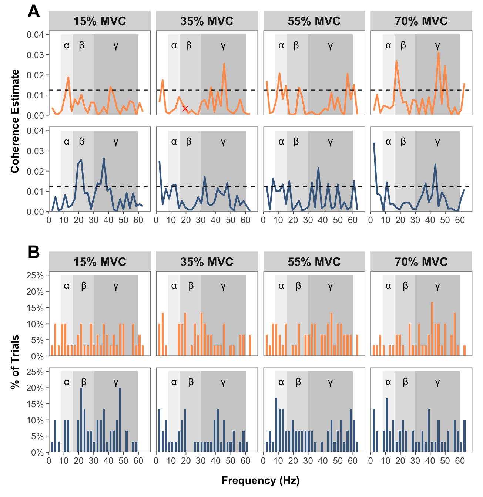
Comparison of coherence plots
Show function for plotting comparison of coherence plots
# FUNCTION: create_faceted_comparison_of_coherence_plots
# Creates NeuroSpec-style plots for comparison of coherence in a faceted layout
# Inputs:
# - data: "comparison_of_coherence_data.csv"
# Outputs:
# - 2x2 faceted plot with force levels
create_faceted_comparison_of_coherence_plots <- function(data) {
# Force levels to use
force_levels <- c("15", "35", "55", "70")
# Create empty list to store reshaped data
plot_data_list <- list()
# Reshape data for each force level
for (force in force_levels) {
# Construct column names dynamically
coh_col <- paste0("compcoh_", force)
ci_col <- paste0("ci_", force)
# Create subset with necessary columns
temp_data <- data[, c("freq", coh_col, ci_col)]
names(temp_data) <- c("freq", "coherence", "ci")
temp_data$force_level <- force
plot_data_list <- append(plot_data_list, list(temp_data))
}
# Combine all data
long_data <- do.call(rbind, plot_data_list)
# Convert to factor for proper ordering
long_data$force_level <- factor(long_data$force_level,
levels = c("15", "35", "55", "70"))
# Create the faceted plot
p <- ggplot(long_data, aes(x = freq)) +
# Add shaded frequency bands
annotate("rect", xmin = 8, xmax = 16, ymin = -0.21, ymax = 0.21,
fill = "grey90", alpha = 0.5) +
annotate("rect", xmin = 16, xmax = 30, ymin = -0.21, ymax = 0.21,
fill = "grey75", alpha = 0.5) +
annotate("rect", xmin = 30, xmax = 60, ymin = -0.21, ymax = 0.21,
fill = "grey60", alpha = 0.5) +
# Add symbols for frequency bands
annotate("text", x = 12, y = 0.18, label = "\u03B1", size = 12/.pt) +
annotate("text", x = 23, y = 0.18, label = "\u03B2", size = 12/.pt) +
annotate("text", x = 45, y = 0.18, label = "\u03B3", size = 12/.pt) +
# Add confidence intervals as horizontal lines
geom_hline(aes(yintercept = ci), color = "#fe9d5d", linewidth = 1) +
geom_hline(aes(yintercept = -ci), color = "#456990", linewidth = 1) +
# Add zero line
geom_hline(yintercept = 0, linetype = "dashed", linewidth = 0.5) +
# Add coherence line
geom_line(aes(y = coherence), linewidth = 0.5) +
# Set axis limits and breaks
scale_x_continuous(
limits = c(0, 65),
breaks = seq(0, 60, by = 10),
name = "Frequency (Hz)",
expand = expansion(mult = c(0, 0.05))
) +
scale_y_continuous(
limits = c(-0.21, 0.21),
name = "Difference of Coherence",
expand = expansion(mult = c(0, 0.05))
) +
# Create 2x2 facets using facet_wrap
facet_wrap(~ force_level,
nrow = 2,
ncol = 2,
labeller = labeller(
force_level = function(x) paste0(x, "% MVC")
)) +
# Theme modifications
theme_bw() +
theme(
panel.grid.major = element_blank(),
panel.grid.minor = element_blank(),
panel.background = element_blank(),
#strip.background = element_rect(color = NA),
strip.text.y = element_blank(),
strip.text.x = element_text(face = "bold", size = 12),
strip.placement = "outside",
panel.spacing = unit(0.8, "lines"),
panel.border = element_rect(color = "grey70", fill = NA, linewidth = 0.5),
axis.ticks = element_line(color = "grey30", linewidth = 0.3),
strip.background = element_rect(color = NA, fill = "grey90"),
# Change Axis Fonts
axis.title.x = element_text(face = "bold"),
axis.text.x = element_text(size=9),#face = "bold"),
axis.title.y = element_text(face = "bold"),
axis.text.y = element_text(size=9),#face = "bold"),
# Position legend closer to the x-axis
legend.position = "bottom",
legend.margin = margin(t = 0, r = 0, b = 10, l = 0),
legend.box.margin = margin(t = -7, r = 0, b = 0, l = 0)
)
return(p)
}# Create the faceted plot
faceted_comparison_coh_plot <- create_faceted_comparison_of_coherence_plots(comparison_of_coherence_data)Show function for plotting average coherence across entire band
# FUNCTION: average_band_coherence
# Collapses pooled coherence across participants in each group at each force level for each band (alpha, beta and gamma)
# Inputs:
# - data: "pooled_coherence_data.csv"
# Outputs:
# - 3x1 faceted plot with coherence bands and force levels
average_band_coherence <- function(pooled_coherence_data) {
# Get column names containing coherence data
coh_cols <- grep("coh_", names(pooled_coherence_data), value = TRUE)
# Initialize an empty dataframe for the results
result_df <- data.frame(matrix(ncol = length(coh_cols), nrow = 3))
colnames(result_df) <- coh_cols
rownames(result_df) <- c("alpha", "beta", "gamma")
# Define row ranges for each frequency band
alpha_rows <- 4:7
beta_rows <- 8:13
gamma_rows <- 14:28
# Calculate averages for each column and frequency band
for (col in coh_cols) {
col_data <- as.numeric(as.character(pooled_coherence_data[[col]]))
# Calculate average for alpha band (rows 4-7)
result_df[1, col] <- mean(col_data[alpha_rows], na.rm = TRUE)
# Calculate average for beta band (rows 8-28)
result_df[2, col] <- mean(col_data[beta_rows], na.rm = TRUE)
# Calculate average for gamma band (rows 14-28)
result_df[3, col] <- mean(col_data[gamma_rows], na.rm = TRUE)
}
# Convert result_df to a long format for easier plotting
# First, add a row identifier for the frequency bands
long_df <- as.data.frame(result_df)
long_df$band <- rownames(long_df)
# Reshape the data to long format
long_df <- pivot_longer(
long_df,
cols = -band,
names_to = "condition",
values_to = "coherence"
)
# Extract the group and force level from the condition column
long_df <- long_df %>%
mutate(
group = ifelse(grepl("strength", condition), "Strength", "Dexterity"),
force = as.numeric(sub(".*_coh_(\\d+)$", "\\1", condition))
)
# Convert band directly to a factor with capitalized labels
long_df$band <- factor(long_df$band,
levels = c("alpha", "beta", "gamma"),
labels = c("Alpha", "Beta", "Gamma"))
# Convert group to a factor for color mapping
long_df$group <- factor(long_df$group, levels = c("Strength", "Dexterity"))
# Create your plot with adjusted spacing
facet_plot <- ggplot(long_df, aes(x = force, y = coherence, color = group, group = group)) +
geom_line(size = 1) +
geom_point(size = 3) +
scale_x_continuous(
breaks = c(15, 35, 55, 70),
labels = c("15%", "35%", "55%", "70%"),
limits = c(10, 75)
) +
scale_y_continuous(limits = c(0, 0.015)) +
scale_color_manual(values = c("Strength" = "#fe9d5d", "Dexterity" = "#456990"),
name = "Testing Group") +
facet_wrap(~ band, ncol = 3) +
labs(x = "Percentage of MVC",
y = "Average Coherence") +
theme_bw() +
theme(
panel.grid.major = element_blank(),
panel.grid.minor = element_blank(),
panel.background = element_blank(),
strip.text = element_text(face = "bold", size = 12),
strip.placement = "outside",
panel.spacing = unit(0.3, "lines"),
panel.border = element_rect(color = "grey70", fill = NA, linewidth = 0.5),
axis.ticks = element_line(color = "grey30", linewidth = 0.3),
strip.background = element_rect(color = NA, fill = "grey90"),
# Change axis fonts
axis.title.x = element_text(margin = margin(t = 11, r = 0, b = 0, l = 0), #change spacing
face = "bold"),
axis.title.y = element_text(face = "bold"),
axis.text.x = element_text(face = "bold"),
legend.title = element_text(face = "bold", size = 9),
# Position legend closer to the x-axis
legend.position = "bottom",
legend.margin = margin(t = 0, r = 0, b = 10, l = 0),
legend.box.margin = margin(t = -7, r = 0, b = 0, l = 0)
)
return(facet_plot)
}facet_plot <- average_band_coherence(pooled_coherence_data)Warning: Using `size` aesthetic for lines was deprecated in ggplot2 3.4.0.
ℹ Please use `linewidth` instead.faceted_comparison_coh_plot <- faceted_comparison_coh_plot + theme(
legend.margin = margin(t = 0, r = 0, b = 10, l = 0),
legend.box.margin = margin(t = -7, r = 0, b = 0, l = 0),
plot.tag.position = c(0.05, 1),
plot.tag = element_text(size = 18, face = "bold"))
combined_comparison <- faceted_comparison_coh_plot/ plot_spacer() / facet_plot +
plot_layout(heights = c(2, 0.05, 0.8)) +
plot_annotation(tag_levels = "A") +
theme(
legend.margin = margin(t = 0, r = 0, b = 10, l = 0),
legend.box.margin = margin(t = -7, r = 0, b = 0, l = 0),
plot.tag.position = c(0.05, 1),
plot.tag = element_text(size = 18, face = "bold")
)
print(combined_comparison)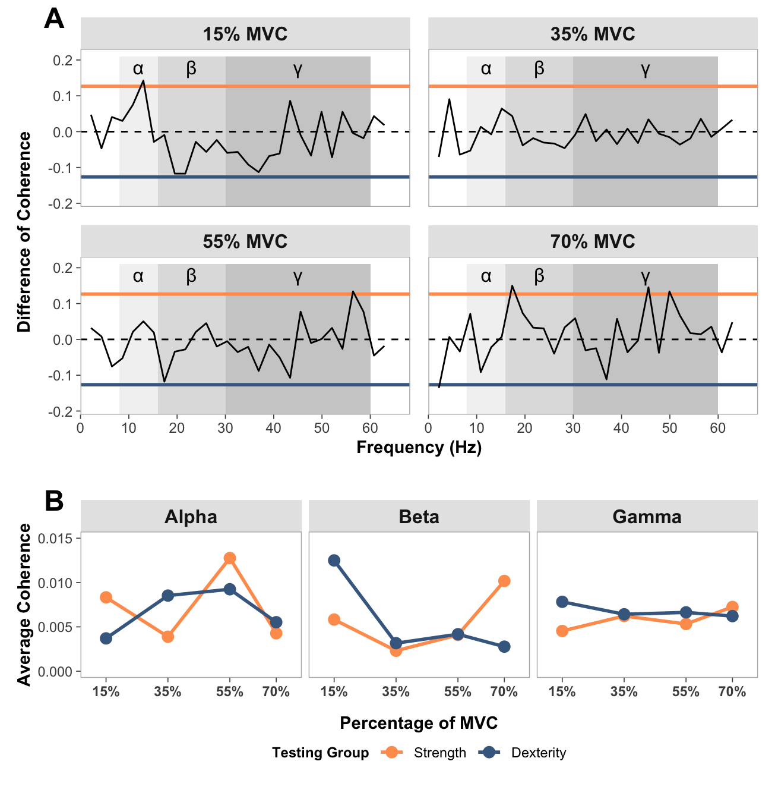
Clustering analysis
rms_data_for_R <- read_csv("rms_data_for_R.csv",
col_types = cols(group = col_factor(levels = c("strength",
"dexterity")), participant = col_factor(levels = c("1",
"2", "3", "4", "5", "6", "7", "8",
"9", "10", "11", "12", "13", "14",
"16", "17", "18", "19", "20", "21")),
trial = col_factor(levels = c("1",
"2", "3")), forcelevel = col_factor(levels = c("15",
"35", "55", "70"))))Determine whether clustering is appropriate
Show function for calculating optimal clusters
# FUNCTION: determine_optimal_clusters
# Analyzes time series data to determine the optimal number of clusters for muscle activation patterns
# using both the Elbow method (WCSS) and Silhouette analysis.
# Inputs:
# - data: Dataframe containing muscle activation data (must include columns: participant,
# group, forcelevel, time, force, and the specified muscle_name)
# - muscle_name: Name of the muscle column to analyze ("fds", "apb")
# - group_filter: Vector of group names to include (c("strength", "dexterity"))
# - force_level: The force level to analyze ("15", "35", "55", "70")
# - max_k: Maximum number of clusters to consider (default = 6)
# Outputs: List containing:
# - elbow_data: Dataframe with WCSS values for each k
# - silhouette_data: Dataframe with silhouette scores for each k
# - optimal_k_elbow: Optimal number of clusters according to Elbow method
# - optimal_k_silhouette: Optimal number of clusters according to Silhouette method
# - plots: List containing the elbow plot
# - muscle_series_list: Preprocessed time series for clustering
# - averaged_data: Processed data with trials averaged by participant
# - participant_groups: Group assignments for each participant
determine_optimal_clusters <- function(data, muscle_name, group_filter, force_level, max_k = 6) {
# Filter data for the specified group and force level
single_subset <- data %>%
filter(group %in% group_filter, forcelevel == force_level)
# Average trials for each participant to reduce noise and variability
averaged_data <- single_subset %>%
group_by(participant, time) %>%
summarise(
# Calculate mean for muscle activation and force across trials
across(all_of(c(muscle_name, "force")), ~mean(., na.rm = TRUE), .names = "avg_{.col}"),
.groups = "drop"
)
# Extract group information for each participant (for later analysis)
participant_groups <- single_subset %>%
group_by(participant) %>%
summarise(group = first(group), .groups = "drop") %>%
distinct()
# Join group information to the averaged data for complete dataset
averaged_data <- averaged_data %>%
left_join(participant_groups, by = "participant")
# Extract time series for each participant (these will be clustered)
muscle_col <- paste0("avg_", muscle_name)
muscle_series_list <- averaged_data %>%
group_by(participant) %>%
arrange(time) %>% # Ensure time order is preserved
summarise(series = list(!!sym(muscle_col)), .groups = "drop") %>%
pull(series)
# WCSS METHOD
# Special case: Calculate WCSS for k=1 (not handled by clustering algorithm)
all_values <- do.call(cbind, muscle_series_list)
mean_series <- rowMeans(all_values, na.rm = TRUE)
# For k=1, WCSS is sum of squared distances from each point to the overall mean
wcss_k1 <- sum(apply(all_values, 2, function(x) sum((x - mean_series)^2, na.rm = TRUE)))
# Define range of k values to evaluate (starting from k=2)
k_range <- 2:max_k
wcss_values <- numeric(length(k_range))
# SILHOUTTE SCORES
# Initialize storage for silhouette scores (+1 to include k=1)
sil_values <- numeric(length(k_range) + 1)
sil_values[1] <- 0 # Set k=1 silhouette to 0 (not defined for single cluster)
# Create distance matrix for silhouette calculation using DTW
dist_matrix <- proxy::dist(muscle_series_list, method = "dtw")
dist_matrix <- as.dist(as.matrix(dist_matrix))
# Loop for 1:k range clusters
for (i in seq_along(k_range)) {
k_val <- k_range[i]
set.seed(123) # Set seed for reproducibility
# Perform k-shape clustering (shape-based distance, appropriate for time series)
temp_clust <- tsclust(muscle_series_list,
type = "partitional",
k = k_val,
distance = "sbd", # Shape-based distance
centroid = "shape",
control = partitional_control(nrep = 1))
# Calculate WCSS
centroids <- temp_clust@centroids
clusters <- temp_clust@cluster
wcss <- 0
# Calculate sum of squared distances from each point to its assigned centroid
for (j in 1:length(muscle_series_list)) {
cluster_id <- clusters[j]
centroid <- centroids[[cluster_id]]
ts <- muscle_series_list[[j]]
# Use DTW distance (appropriate for time series) and square it
dist_sq <- proxy::dist(matrix(ts, ncol=1), matrix(centroid, ncol=1), method="dtw")^2
wcss <- wcss + dist_sq
}
# Store WCSS for this k value
wcss_values[i] <- wcss
# Calculate silhoutte scores
# Only applicable for k > 1 (silhouette not defined for single cluster)
if (k_val > 1) {
sil <- silhouette(temp_clust@cluster, dist_matrix)
sil_values[i+1] <- mean(sil[, "sil_width"])
}
}
# Prepare results
# Combine k=1 with other k values for WCSS plotting
elbow_df <- data.frame(k = c(1, k_range), wcss = c(wcss_k1, wcss_values))
# Calculate percentage improvement from k to k+1 for WCSS
# This helps identify the "elbow point" where adding more clusters gives diminishing returns
elbow_df$improvement <- c(NA, diff(-elbow_df$wcss) / elbow_df$wcss[-length(elbow_df$wcss)])
# Create silhouette dataframe (k=1 to k=max_k, with k=1 having silhouette of 0)
silhouette_df <- data.frame(
k = 1:max_k,
silhouette = sil_values
)
# Plot elbow plots
p1 <- ggplot(elbow_df, aes(x = k, y = wcss)) +
geom_line() +
geom_point(size = 3) +
labs(title = paste0("Elbow Method for Optimal Cluster Count: ", toupper(muscle_name), " ", force_level, "% MVC"),
x = "Number of Clusters (k)",
y = "Within-Cluster Sum of Squares (WCSS)") +
theme_minimal()
print(p1)
# ----- PRINT RESULTS -----
cat("\nSilhouette Method Results:\n")
for (i in 2:max_k) {
cat(sprintf("k=%d, Silhouette = %.4f\n", i, silhouette_df$silhouette[i]))
}
# ----- RETURN RESULTS -----
# Return comprehensive results including plots and preprocessed data
return(list(
elbow_data = elbow_df, # WCSS values for each k
silhouette_data = silhouette_df, # Silhouette scores for each k
plots = list(elbow_plot = p1), # Elbow plot for visualization
# Include preprocessed data to avoid recalculation in subsequent analysis
muscle_series_list = muscle_series_list, # Time series for clustering
averaged_data = averaged_data, # Processed data with trial averaging
participant_groups = participant_groups # Group assignments
))
}# Run for all force levels
force_levels <- c("15", "35", "55", "70")
optimizations <- list()
results <- list()
# Step 1: Run all optimizations for FDS
for (level in force_levels) {
cat("\n\nFDS at", level, "%:\n")
optimizations[[level]] <- determine_optimal_clusters(
data = rms_data_for_R,
muscle_name = "fds",
group_filter = c("strength", "dexterity"),
force_level = level
)
}
FDS at 15 %:
Silhouette Method Results:
k=2, Silhouette = 0.3124
k=3, Silhouette = 0.2021
k=4, Silhouette = -0.0553
k=5, Silhouette = -0.1472
k=6, Silhouette = -0.3096
FDS at 35 %: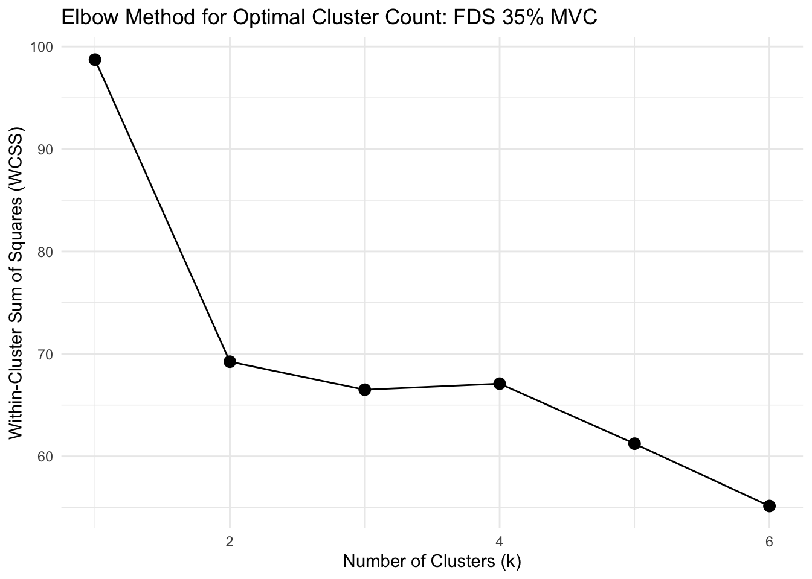
Silhouette Method Results:
k=2, Silhouette = 0.4424
k=3, Silhouette = 0.2997
k=4, Silhouette = 0.0957
k=5, Silhouette = -0.0756
k=6, Silhouette = -0.0517
FDS at 55 %:
Silhouette Method Results:
k=2, Silhouette = 0.1006
k=3, Silhouette = -0.1699
k=4, Silhouette = 0.0637
k=5, Silhouette = -0.0971
k=6, Silhouette = -0.1586
FDS at 70 %: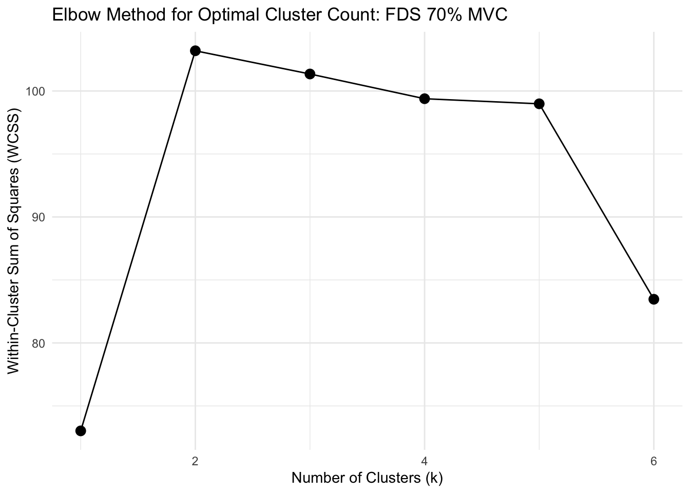
Silhouette Method Results:
k=2, Silhouette = 0.2064
k=3, Silhouette = 0.2229
k=4, Silhouette = 0.0968
k=5, Silhouette = -0.0698
k=6, Silhouette = -0.0534# Step 2: Run all optimizations for APB
for (level in force_levels) {
cat("\n\nRunning optimization for APB muscle at force level", level, "%\n")
optimizations[[level]] <- determine_optimal_clusters(
data = rms_data_for_R,
muscle_name = "apb",
group_filter = c("strength", "dexterity"),
force_level = level
)
}
Running optimization for APB muscle at force level 15 %
Silhouette Method Results:
k=2, Silhouette = 0.2017
k=3, Silhouette = 0.1935
k=4, Silhouette = 0.0783
k=5, Silhouette = 0.0583
k=6, Silhouette = 0.0439
Running optimization for APB muscle at force level 35 %
Silhouette Method Results:
k=2, Silhouette = 0.4821
k=3, Silhouette = -0.0563
k=4, Silhouette = -0.0354
k=5, Silhouette = -0.0686
k=6, Silhouette = -0.1184
Running optimization for APB muscle at force level 55 %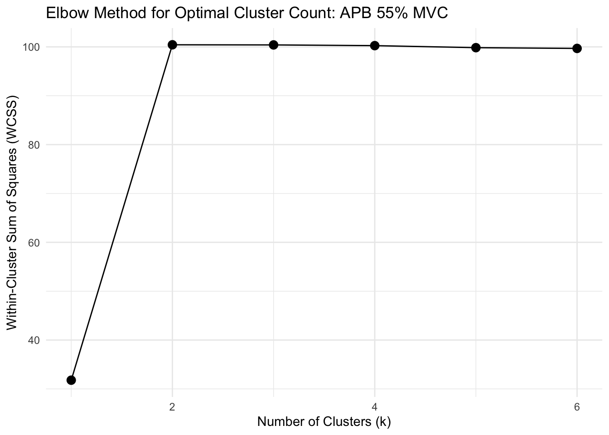
Silhouette Method Results:
k=2, Silhouette = 0.2268
k=3, Silhouette = -0.0006
k=4, Silhouette = 0.0146
k=5, Silhouette = -0.0689
k=6, Silhouette = -0.1540
Running optimization for APB muscle at force level 70 %
Silhouette Method Results:
k=2, Silhouette = 0.0589
k=3, Silhouette = 0.0210
k=4, Silhouette = -0.0058
k=5, Silhouette = -0.0370
k=6, Silhouette = -0.0764Run clustering analysis for the FDS at 15% and 35% MVC
Show function for running clustering analysis
# FUNCTION: analyze_muscle_clusters
# Performs k-shape clustering analysis on muscle activation data
#
# Inputs:
# - data: Dataframe containing muscle activation data (must include columns: participant,
# group, forcelevel, time, force, and the specified muscle_name)
# - muscle_name: Name of the muscle column to analyze ("fds", "apb")
# - group_filter: Vector of group names to include (c("strength", "dexterity"))
# - force_levels: Vector of force levels to analyze (e.g., c("15", "35"))
# - k_values: Number of clusters for k-shape clustering (can be single value or named vector)
#
# Outputs: List containing clustering results for each force level
analyze_muscle_clusters <- function(data, muscle_name, group_filter, force_levels, k_values) {
# Handle k_values input - if single value, apply to all force levels
if(length(k_values) == 1) {
k_vals <- rep(k_values, length(force_levels))
names(k_vals) <- force_levels
} else if(is.null(names(k_values))) {
names(k_values) <- force_levels
k_vals <- k_values
} else {
k_vals <- k_values
}
# Container for results
results_list <- list()
# Process each force level
for(level in force_levels) {
cat("\n=== Analyzing", muscle_name, "at force level", level, "% with k =", k_vals[level], "===\n")
# Step 1: Filter data for the specified group and force level
single_subset <- data %>%
filter(group %in% group_filter, forcelevel == level)
# Step 2: Average trials for each participant
averaged_data <- single_subset %>%
group_by(participant, time) %>%
summarise(
across(all_of(c(muscle_name, "force")), ~mean(., na.rm = TRUE), .names = "avg_{.col}"),
.groups = "drop"
)
# Step 3: Get group information for each participant
participant_groups <- single_subset %>%
group_by(participant) %>%
summarise(group = first(group), .groups = "drop") %>%
distinct()
# Join the group information to the averaged data
averaged_data <- averaged_data %>%
left_join(participant_groups, by = "participant")
# Step 4: Extract the muscle time series for clustering
muscle_col <- paste0("avg_", muscle_name)
muscle_series_list <- averaged_data %>%
group_by(participant) %>%
arrange(time) %>%
summarise(series = list(!!sym(muscle_col)), .groups = "drop") %>%
pull(series)
# Step 5: Perform k-shape clustering
set.seed(123) # For reproducibility
kshape_result <- tsclust(muscle_series_list,
type = "partitional",
k = k_vals[level],
distance = "sbd", # Shape-based distance
centroid = "shape",
control = partitional_control(nrep = 1))
# Step 6: Get cluster assignments and create mapping
cluster_assignments <- kshape_result@cluster
participant_df <- data.frame(
participant = unique(averaged_data$participant)[1:length(cluster_assignments)],
cluster = cluster_assignments
) %>%
left_join(participant_groups, by = "participant")
# Step 7: Join cluster information back to averaged data
clustered_data <- averaged_data %>%
left_join(participant_df, by = c("participant", "group")) %>%
mutate(forcelevel = level)
# Step 8: Create centroids dataframe
centroids <- kshape_result@centroids
time_points <- clustered_data %>%
arrange(time) %>%
pull(time) %>%
unique()
centroids_df <- data.frame()
for (i in 1:k_vals[level]) {
centroid <- centroids[[i]]
# Handle length mismatch with interpolation if needed
if (length(centroid) != length(time_points)) {
approx_fn <- approx(x = seq_along(centroid),
y = centroid,
xout = seq(1, length(centroid), length.out = length(time_points)))
centroid_values <- approx_fn$y
} else {
centroid_values <- centroid
}
temp_df <- data.frame(
time = time_points,
value = centroid_values,
cluster = i,
forcelevel = level
)
centroids_df <- rbind(centroids_df, temp_df)
}
# Step 9: Calculate scaled centroids
cluster_stats <- clustered_data %>%
group_by(cluster) %>%
summarise(
mean_val = mean(!!sym(muscle_col), na.rm = TRUE),
sd_val = sd(!!sym(muscle_col), na.rm = TRUE)
)
centroids_scaled <- data.frame()
for (i in 1:k_vals[level]) {
cluster_centroid <- centroids_df %>% filter(cluster == i)
cluster_stat <- cluster_stats %>% filter(cluster == i)
centroid_mean <- mean(cluster_centroid$value, na.rm = TRUE)
centroid_sd <- sd(cluster_centroid$value, na.rm = TRUE)
scaled_values <- cluster_centroid$value
if (centroid_sd > 0) {
scaled_values <- ((scaled_values - centroid_mean) / centroid_sd) *
cluster_stat$sd_val + cluster_stat$mean_val
} else {
scaled_values <- rep(cluster_stat$mean_val, length(scaled_values))
}
temp_df <- data.frame(
time = cluster_centroid$time,
value = scaled_values,
cluster = i,
forcelevel = level
)
centroids_scaled <- rbind(centroids_scaled, temp_df)
}
# Step 10: Summarize results
participant_clusters <- participant_df %>%
group_by(cluster) %>%
summarise(
participants = paste(participant, collapse = ", "),
count = n()
)
group_by_cluster <- participant_df %>%
group_by(cluster, group) %>%
summarise(count = n(), .groups = "drop") %>%
pivot_wider(names_from = group, values_from = count, values_fill = 0)
# Print results for this force level
cat("Cluster assignments:", cluster_assignments, "\n")
print(participant_clusters)
print(group_by_cluster)
# Store results
results_list[[level]] <- list(
kshape_result = kshape_result,
clustered_data = clustered_data,
centroids_original = centroids_df,
centroids_scaled = centroids_scaled,
participant_clusters = participant_clusters,
group_by_cluster = group_by_cluster,
k_value = k_vals[level]
)
}
return(results_list)
}# Run the clustering analysis
clustering_results <- analyze_muscle_clusters(
data = rms_data_for_R,
muscle_name = "fds",
group_filter = c("strength", "dexterity"),
force_levels = c("15", "35"),
k_values = 2
)
=== Analyzing fds at force level 15 % with k = 2 ===
Cluster assignments: 2 2 1 1 2 1 2 1 1 2 2 2 2 2 1 2 2 1 2 1
# A tibble: 2 × 3
cluster participants count
<int> <chr> <int>
1 1 3, 4, 6, 8, 9, 16, 19, 21 8
2 2 1, 2, 5, 7, 10, 11, 12, 13, 14, 17, 18, 20 12
# A tibble: 2 × 3
cluster strength dexterity
<int> <int> <int>
1 1 6 2
2 2 4 8
=== Analyzing fds at force level 35 % with k = 2 ===
Cluster assignments: 1 1 1 1 2 1 2 1 1 2 2 2 1 2 1 2 1 1 1 1
# A tibble: 2 × 3
cluster participants count
<int> <chr> <int>
1 1 1, 2, 3, 4, 6, 8, 9, 13, 16, 18, 19, 20, 21 13
2 2 5, 7, 10, 11, 12, 14, 17 7
# A tibble: 2 × 3
cluster strength dexterity
<int> <int> <int>
1 1 7 6
2 2 3 4Plotting
Show function for plotting clustering analysis for the FDS at 15% and 35% MVC
# FUNCTION: plot_muscle_clusters
# Creates publication-ready plot for FDS muscle clusters at 35% force level
#
# Inputs:
# - analysis_results: Output from analyze_muscle_clusters()
# - muscle_name: Name of the muscle analyzed (should be "fds")
# - force_level: Force level to plot (should be "35")
#
# Outputs: ggplot object showing 2 clusters faceted by cluster (as rows)
plot_muscle_clusters <- function(analysis_results, muscle_name = "fds", force_level = "35") {
# Define color palette for experimental groups
group_colors <- c("strength" = "#fe9d5d", "dexterity" = "#456990")
# Validate force level exists in analysis results
if(!force_level %in% names(analysis_results)) {
stop(paste("Force level", force_level, "not found in analysis results"))
}
# Extract results for specified force level
result <- analysis_results[[force_level]]
# Filter to first 10 seconds
result$clustered_data <- result$clustered_data %>% filter(time <= 10)
result$centroids_scaled <- result$centroids_scaled %>% filter(time <= 10)
# Format cluster labels for display
result$clustered_data$cluster <- factor(result$clustered_data$cluster,
labels = paste("Cluster", 1:result$k_value))
result$centroids_scaled$cluster <- factor(result$centroids_scaled$cluster,
labels = paste("Cluster", 1:result$k_value))
# Create custom strip title combining muscle name and force levels
strip_title <- "FDS: 15% and 35% MVC"
result$clustered_data$forcelevel <- factor(result$clustered_data$forcelevel,
labels = strip_title)
result$centroids_scaled$forcelevel <- factor(result$centroids_scaled$forcelevel,
labels = strip_title)
# Calculate cluster-wise average force traces
avg_force_data <- result$clustered_data %>%
group_by(cluster, time) %>%
summarise(avg_force = mean(avg_force, na.rm = TRUE), .groups = "drop")
# Apply consistent force level labeling
avg_force_data$forcelevel <- factor(force_level, labels = strip_title)
# Generate muscle-specific column name
muscle_col <- paste0("avg_", muscle_name)
# Determine EMG scaling parameters
muscle_range <- range(result$clustered_data[[muscle_col]], na.rm = TRUE)
muscle_min <- muscle_range[1]
muscle_max <- muscle_range[2]
# Normalize force data within each cluster (0-1 range)
for(cluster_level in unique(avg_force_data$cluster)) {
subset_rows <- avg_force_data$cluster == cluster_level
# Calculate cluster-specific force range
current_force_range <- range(avg_force_data$avg_force[subset_rows], na.rm = TRUE)
current_force_min <- current_force_range[1]
current_force_max <- current_force_range[2]
# Apply normalization if range exists
if(current_force_max > current_force_min) {
avg_force_data$avg_force[subset_rows] <-
(avg_force_data$avg_force[subset_rows] - current_force_min) /
(current_force_max - current_force_min)
}
# Constrain normalized values to [0,1] range
avg_force_data$avg_force[subset_rows] <- pmin(pmax(avg_force_data$avg_force[subset_rows], 0), 1)
}
# Scale force traces to match EMG amplitude range (75% of EMG range)
scale_force <- function(x) {
reduced_max <- 0.75 # Scale factor to prevent force trace overlap with EMG data
x_reduced <- x * reduced_max
scaled <- ((x_reduced - 0) / (1 - 0)) * (muscle_max - muscle_min) + muscle_min
return(scaled)
}
avg_force_data$scaled_force <- scale_force(avg_force_data$avg_force)
# Generate publication-ready plot
pub_plot <- ggplot() +
# Individual participant EMG time series (colored by experimental group)
geom_line(data = result$clustered_data,
aes(x = time, y = !!sym(muscle_col),
group = participant, color = group), size = 0.2) +
# Cluster centroids (bold black lines)
geom_line(data = result$centroids_scaled,
aes(x = time, y = value, group = 1, size = "Centroid"),
color = "black") +
# Average force traces (dashed grey lines)
geom_line(data = avg_force_data,
aes(x = time, y = scaled_force, linetype = "Force"),
color = "grey40", size = 1.2) +
# Configure y-axis
scale_y_continuous(name = "Normalized EMG RMS") +
# Set x axis ticks
scale_x_continuous(breaks = c(0,5,10)) +
# Create cluster-based faceting
facet_grid(cluster ~ forcelevel, switch = "y") +
# Apply group color scheme
scale_color_manual(values = group_colors,
labels = c("strength" = "Strength", "dexterity" = "Dexterity")) +
# Set axis labels
labs(x = "Time (s)", color = "Testing Group") +
# Apply publication theme
theme_bw() +
theme(
legend.position = "none", # Remove legend for cleaner appearance
panel.grid = element_blank(), # Remove grid lines
strip.text = element_text(face = "bold"), # Bold strip text
strip.background = element_rect(color = NA), # Transparent strip background
strip.text.y = element_text(face = "bold", size = 11), # Y-axis strip formatting
strip.text.x = element_text(face = "bold", size = 14), # X-axis strip formatting
strip.placement = "outside", # Place strips outside plot area
axis.title.x = element_text(margin = margin(t = 10), face = "bold", size = 12),
axis.title.y = element_text(margin = margin(r = 10), face = "bold", size = 12),
axis.title.y.right = element_text(margin = margin(l = 10))
) +
# Configure line type and size aesthetics
scale_linetype_manual(name = "Force", values = "dashed", labels = NULL) +
scale_size_manual(name = "Cluster Centroid", values = c(1.5, 0.6),
guide = guide_legend(override.aes = list(color = "black",
linetype = "solid")),
labels = NULL)
return(pub_plot)
}fds_clusters_15_35_plot <- plot_muscle_clusters(
analysis_results = clustering_results,
muscle_name = "fds",
force_level = "35"
)Show function for plotting representative trials for APB and FDS that did not need clustering
# FUNCTION: plot_muscle_no_clusters
# Creates publication-ready plot for FDS muscle data without clustering at 35% force level
#
# Inputs:
# - data: Dataset containing participant EMG data with columns:
# time, avg_fds, avg_apb, group, participant, forcelevel, avg_force
# - muscle_name: "apb" or "fds"
# - force_level: Force level to filter (should be "35")
#
# Outputs: ggplot object showing all data in single "No Clusters" facet
plot_muscle_no_clusters <- function(data, muscle_name = "fds", force_level = "35", strip_title = NULL) {
# Define color palette for experimental groups
group_colors <- c("strength" = "#fe9d5d", "dexterity" = "#456990")
# Filter data to specified force level and first 10 seconds
filtered_data <- data %>%
filter(forcelevel == force_level, time <= 10)
# Check if data exists for specified force level
if(nrow(filtered_data) == 0) {
stop(paste("No data found for force level", force_level))
}
# Generate muscle-specific column name
muscle_col <- paste0("avg_", muscle_name)
# Check if muscle column exists
if(!muscle_col %in% names(filtered_data)) {
stop(paste("Column", muscle_col, "not found in data"))
}
# Calculate centroids as average of all participants
centroids <- filtered_data %>%
group_by(time) %>%
summarise(value = mean(!!sym(muscle_col), na.rm = TRUE), .groups = "drop")
# Add cluster label for faceting
filtered_data$cluster <- factor("No Clusters")
centroids$cluster <- factor("No Clusters")
# Create custom strip title - use provided title or default
if(is.null(strip_title)) {
strip_title <- "FDS: 15% and 35% MVC"
}
filtered_data$forcelevel <- factor(filtered_data$forcelevel,
labels = strip_title)
centroids$forcelevel <- factor(force_level, labels = strip_title)
# Calculate average force traces
avg_force_data <- filtered_data %>%
group_by(time) %>%
summarise(avg_force = mean(avg_force, na.rm = TRUE), .groups = "drop")
# Add cluster and force level labels
avg_force_data$cluster <- factor("No Clusters")
avg_force_data$forcelevel <- factor(force_level, labels = strip_title)
# Determine EMG scaling parameters
muscle_range <- range(filtered_data[[muscle_col]], na.rm = TRUE)
muscle_min <- muscle_range[1]
muscle_max <- muscle_range[2]
# Normalize force data (0-1 range)
force_range <- range(avg_force_data$avg_force, na.rm = TRUE)
force_min <- force_range[1]
force_max <- force_range[2]
# Apply normalization if range exists
if(force_max > force_min) {
avg_force_data$avg_force <-
(avg_force_data$avg_force - force_min) / (force_max - force_min)
}
# Constrain normalized values to [0,1] range
avg_force_data$avg_force <- pmin(pmax(avg_force_data$avg_force, 0), 1)
# Scale force traces to match EMG amplitude range (75% of EMG range)
scale_force <- function(x) {
reduced_max <- 0.75 # Scale factor to prevent force trace overlap with EMG data
x_reduced <- x * reduced_max
scaled <- ((x_reduced - 0) / (1 - 0)) * (muscle_max - muscle_min) + muscle_min
return(scaled)
}
avg_force_data$scaled_force <- scale_force(avg_force_data$avg_force)
# Generate publication-ready plot
pub_plot <- ggplot() +
# Individual participant EMG time series (colored by experimental group)
geom_line(data = filtered_data,
aes(x = time, y = !!sym(muscle_col),
group = participant, color = group), size = 0.2) +
# Centroids (bold black lines)
geom_line(data = centroids,
aes(x = time, y = value, group = 1, size = "Centroid"),
color = "black") +
# Average force traces (dashed grey lines)
geom_line(data = avg_force_data,
aes(x = time, y = scaled_force, linetype = "Force"),
color = "grey40", size = 1.2) +
# Configure y-axis
scale_y_continuous(name = "Normalized EMG RMS") +
# Set x axis ticks
scale_x_continuous(breaks = c(0,5,10)) +
# Create cluster-based faceting
facet_grid(cluster ~ forcelevel, switch = "y") +
# Apply group color scheme
scale_color_manual(values = group_colors,
labels = c("strength" = "Strength", "dexterity" = "Dexterity")) +
# Set axis labels
labs(x = "Time (s)", color = "Testing Group") +
# Apply publication theme
theme_bw() +
theme(
legend.position = "none", # Remove legend for cleaner appearance
panel.grid = element_blank(), # Remove grid lines
strip.text = element_text(face = "bold"), # Bold strip text
strip.background = element_rect(color = NA), # Transparent strip background
strip.text.y = element_text(face = "bold", size = 11), # Y-axis strip formatting
strip.text.x = element_text(face = "bold", size = 14), # X-axis strip formatting
strip.placement = "outside", # Place strips outside plot area
axis.title.x = element_text(margin = margin(t = 10), face = "bold", size = 12),
axis.title.y = element_text(margin = margin(r = 10), face = "bold", size = 12),
axis.title.y.right = element_text(margin = margin(l = 10))
) +
# Configure line type and size aesthetics
scale_linetype_manual(name = "Force", values = "dashed", labels = NULL) +
scale_size_manual(name = "Cluster Centroid", values = c(1.5, 0.6),
guide = guide_legend(override.aes = list(color = "black",
linetype = "solid")),
labels = NULL)
return(pub_plot)
}# Filter data for the groups and force levels you want
filtered_data <- rms_data_for_R %>%
filter(group %in% c("strength", "dexterity"),
forcelevel %in% c("15", "35", "55", "70"))
# Average trials for each participant at each force level and time point
averaged_data <- filtered_data %>%
group_by(participant, forcelevel, time) %>%
summarise(
avg_fds = mean(fds, na.rm = TRUE),
avg_apb = mean(apb, na.rm = TRUE),
avg_force = mean(force, na.rm = TRUE),
.groups = "drop"
)
# Add group information back
participant_groups <- filtered_data %>%
group_by(participant) %>%
summarise(group = first(group), .groups = "drop") %>%
distinct()
# Join group info to averaged data
averaged_data <- averaged_data %>%
left_join(participant_groups, by = "participant")
apb_clusters_plot <- plot_muscle_no_clusters(averaged_data, muscle_name = "apb",
force_level = "70",
strip_title = "APB: All Force Levels")
fds_clusters_55_70_plot <- plot_muscle_no_clusters(averaged_data, muscle_name = "fds",
force_level = "70",
strip_title = "FDS: 55% and 70% MVC")fds_clusters_combined_plot <- fds_clusters_15_35_plot + fds_clusters_55_70_plot + plot_layout(heights = c(2,1), axis_titles = "collect_x")
combined_cluster_plot <- apb_clusters_plot + plot_spacer() + fds_clusters_combined_plot + plot_layout(heights = c(0.8,0.05,3))
print(combined_cluster_plot)
Online Resource 1
Table of significant pooled coherence frequencies
Show function to get all coherence frequencies which cross the CL
# FUNCTION: compare_with_ci
# Creates tables of significant frequencies based on the coherence confidence limits from the Neurospec Toolbox.
# Inputs:
# - data: "pooled_coherence_data"
# - lower_freq_limit: Lower limit for frequencies of interest.
# - upper_freq_limit: Upper limit for frequencies of interest.
# Outputs:
# - Table of significant frequencies.
compare_with_ci <- function(df, lower_freq_limit = 8, upper_freq_limit = 60) {
# Get the CI reference value from row 1 of strength_ci_15 column
ci_reference <- df$strength_ci_15[1]
# Find all coherence columns
coh_cols <- names(df)[grepl("_(coh|cohxy)_", names(df))]
# Initialize empty lists for results
all_mvcs <- character()
all_groups <- character()
all_frequencies <- numeric()
# Process each coherence column
for(col_name in coh_cols) {
# Extract testing group and force level from column name
parts <- strsplit(col_name, "_")[[1]]
testing_group <- parts[1] # "strength" or "dexterity"
force_level <- parts[3] # "15", "35", "55", or "70"
# Compare direct values against CL
comparison_df <- df %>%
filter(freq >= lower_freq_limit, freq <= upper_freq_limit,
.data[[col_name]] > ci_reference)
# Determine group from column name
group <- if(grepl("strength", testing_group, ignore.case = TRUE))
"Strength" else "Dexterity"
# Add results to vectors
all_mvcs <- c(all_mvcs, rep(force_level, nrow(comparison_df)))
all_groups <- c(all_groups, rep(group, nrow(comparison_df)))
all_frequencies <- c(all_frequencies, comparison_df$freq)
}
# Create final long format dataframe
results_df <- data.frame(
MVC = all_mvcs,
Group = all_groups,
Frequencies = round(all_frequencies,2)
)
# Convert MVC to numeric and sort
results_df$MVC <- as.numeric(results_df$MVC)
results_df <- results_df %>%
arrange(MVC, Group)
return(results_df)
}# Identify the significant results
significant_coherence_results <- compare_with_ci(pooled_coherence_data) %>%
rename("Significant Frequencies" = Frequencies)
# Create table
kable(significant_coherence_results,
align = c('c', 'c', 'c')) %>%
kable_styling(c("striped", "hover", "condensed"),
full_width = FALSE) %>%
column_spec(1:3, width = "100px") %>%
collapse_rows(columns = c(1,2), valign = "middle")| MVC | Group | Significant Frequencies |
|---|---|---|
| 15 | Dexterity | 19.53 |
| 21.70 | ||
| 32.55 | ||
| 34.72 | ||
| 36.89 | ||
| Strength | 13.02 | |
| 41.23 | ||
| 35 | Dexterity | 10.85 |
| 13.02 | ||
| 32.55 | ||
| 47.74 | ||
| Strength | 36.89 | |
| 45.57 | ||
| 55 | Dexterity | 13.02 |
| 17.36 | ||
| 32.55 | ||
| 36.89 | ||
| 43.40 | ||
| 49.91 | ||
| Strength | 10.85 | |
| 15.19 | ||
| 23.87 | ||
| 56.42 | ||
| 70 | Dexterity | 10.85 |
| 36.89 | ||
| 43.40 | ||
| Strength | 17.36 | |
| 19.53 | ||
| 45.57 | ||
| 49.91 |
Online Resource 2
cluster_coherence <- read_csv("cluster_coherence.csv")Show function to plot coherence analysis for participant subclusters
# FUNCTION: create_cluster_vs_pooled_ci_scaled
# Function for subcluster coherence analysis, compared with full dataset (scaled based on CI).
# Inputs:
# - cluster_data: "cluster_coherence"
# - pooled_data: "pooled_coherence_data"
# - mvc_level: 15, 35
# - test_type: str or dext
# - ci_position: scales the confidence interval (diff no. of participants)
# Outputs:
# - Plots comparing coherence of expected cluster subgroup vs entire dataset
#
create_cluster_vs_pooled_ci_scaled <- function(cluster_data, pooled_data, mvc_level, test_type, ci_position = 0.75) {
# Define data types
data_types <- c("cluster1", "pooled")
# Create empty list to store reshaped data
plot_data_list <- list()
ci_values <- numeric(length(data_types))
# Reshape data
for (i in seq_along(data_types)) {
data_type <- data_types[i]
if (data_type == "cluster1") {
# Construct column names for cluster data
coh_col <- paste0("clust1_", mvc_level, "_", test_type)
ci_col <- paste0("ci_clust1_", mvc_level, "_", test_type)
# Create subset with necessary columns
temp_data <- cluster_data[, c("f", coh_col, ci_col)]
names(temp_data) <- c("freq", "coherence", "ci")
temp_data$data_type <- data_type
} else if (data_type == "pooled") {
# Construct column names for pooled data
group_name <- ifelse(test_type == "str", "strength", "dexterity")
# Extract just the number from mvc_level (e.g., "15mvc" -> "15")
mvc_number <- gsub("mvc", "", mvc_level)
coh_col <- paste0(group_name, "_coh_", mvc_number)
ci_col <- paste0(group_name, "_ci_", mvc_number)
# Create subset with necessary columns
temp_data <- pooled_data[, c("freq", coh_col, ci_col)]
names(temp_data) <- c("freq", "coherence", "ci")
temp_data$data_type <- data_type
}
# Store CI value for scaling
ci_values[i] <- unique(temp_data$ci)[1] # Assuming CI is constant within each dataset
plot_data_list <- append(plot_data_list, list(temp_data))
}
# Combine all data
long_data <- do.call(rbind, plot_data_list)
# Convert to factors for proper ordering
long_data$data_type <- factor(long_data$data_type,
levels = c("cluster1", "pooled"))
# Calculate y-axis limits based on CI position
# CI should appear at ci_position (e.g., 0.2 = 20% up the y-axis)
y_max_cluster <- ci_values[1] / ci_position
y_max_pooled <- ci_values[2] / ci_position
# Define colors based on test type
line_color <- switch(test_type,
"str" = "#fe9d5d",
"dext" = "#456990",
"#000000") # default black if neither
# Create the faceted plot
p <- ggplot(long_data, aes(x = freq)) +
# Add frequency band annotations scaled to each subplot (behind lines)
annotate("rect", xmin = 8, xmax = 16, ymin = 0, ymax = y_max_cluster,
fill = "grey90", alpha = 0.5) +
annotate("rect", xmin = 16, xmax = 30, ymin = 0, ymax = y_max_cluster,
fill = "grey75", alpha = 0.5) +
annotate("rect", xmin = 30, xmax = 60, ymin = 0, ymax = y_max_cluster,
fill = "grey60", alpha = 0.5) +
# Add symbols for Cluster 1 (positioned relative to its scale)
annotate("text", x = 12, y = y_max_cluster * 0.85, label = "\u03B1", size = 12/.pt) +
annotate("text", x = 22, y = y_max_cluster * 0.85, label = "\u03B2", size = 12/.pt) +
annotate("text", x = 45, y = y_max_cluster * 0.85, label = "\u03B3", size = 12/.pt) +
# Add coherence line
geom_line(aes(y = coherence), color = line_color, linewidth = 0.8) +
# Add confidence interval as dashed line
geom_hline(aes(yintercept = ci), linetype = "dashed", linewidth = 0.4) +
# Set axis limits and breaks
scale_x_continuous(
limits = c(0, 65),
breaks = seq(0, 60, by = 10),
name = "Frequency (Hz)",
expand = expansion(mult = c(0, 0.05))
) +
# Create facets with free y scales
facet_grid(data_type ~ .,
scales = "free_y",
switch = "y",
labeller = labeller(
data_type = c("cluster1" = "Cluster 1 only", "pooled" = "All data")
)) +
# Theme modifications
theme_bw() +
theme(
panel.grid.major = element_blank(),
panel.grid.minor = element_blank(),
panel.background = element_blank(),
strip.text.y = element_text(face = "bold", size = 10),
strip.placement = "outside",
# Change Axis Fonts
axis.title.x = element_text(face = "bold"),
axis.title.y = element_text(face = "bold"),
plot.title = element_text(hjust = 0.5, face = "bold"),
panel.border = element_rect(color = "grey70", fill = NA, linewidth = 0.5),
axis.ticks = element_line(color = "grey30", linewidth = 0.3),
strip.background = element_rect(color = NA, fill = "grey90")
)
# Define custom y scales for each data type
y_scales <- list(
# Cluster 1 - scaled based on its CI
scale_y_continuous(
limits = c(0, y_max_cluster),
breaks = round(seq(0, y_max_cluster, length.out = 3), 2),
name = "Coherence Estimate",
# expand = expansion(mult = c(0, 0.02))
),
# Pooled - scaled based on its CI
scale_y_continuous(
limits = c(0, y_max_pooled),
breaks = round(seq(0, y_max_pooled, length.out = 3), 2),
name = "Coherence Estimate",
# expand = expansion(mult = c(0, 0.02))
)
)
# Apply custom scales
p <- p + facetted_pos_scales(y = y_scales)
return(p)
}# Create plots
plot_15mvc_dext_ci <- create_cluster_vs_pooled_ci_scaled(cluster_coherence, pooled_coherence_data, "15mvc", "dext", ci_position = 0.25)
plot_15mvc_str_ci <- create_cluster_vs_pooled_ci_scaled(cluster_coherence, pooled_coherence_data, "15mvc", "str", ci_position = 0.25)
plot_35mvc_str_ci <- create_cluster_vs_pooled_ci_scaled(cluster_coherence, pooled_coherence_data, "35mvc", "str", ci_position = 0.25)
plot_35mvc_dext_ci <- create_cluster_vs_pooled_ci_scaled(cluster_coherence, pooled_coherence_data, "35mvc", "dext", ci_position = 0.25)
# Combine plots with patchwork
# 15% MVC
combined_15_cluster_vs_pooled_ci <- plot_15mvc_str_ci + plot_spacer() + plot_15mvc_dext_ci +
plot_layout(widths = c(0.5,0.01,0.5)) +
plot_annotation(
title = "15% MVC",
theme = theme(plot.title = element_text(hjust = 0.5, face = "bold"))
)
# 35% MVC
combined_35_cluster_vs_pooled_ci <- plot_35mvc_str_ci + plot_spacer() + plot_35mvc_dext_ci +
plot_layout(widths = c(0.5,0.01,0.5)) +
plot_annotation(
title = "35% MVC",
theme = theme(plot.title = element_text(hjust = 0.5, face = "bold"))
)
# Helper function to create titles
title_plot <- function(title_text) {
ggplot() +
# Draw a grey rectangle
annotate("rect", xmin = -Inf, xmax = Inf, ymin = -Inf, ymax = Inf, fill = "grey90") +
# Add centered title text
annotate("text", x = 0, y = 0, label = title_text, size = 5,
fontface = "bold", color = "black") +
# Ensure no axis lines, ticks, or labels
theme_void() +
theme(
plot.margin = margin(5,5,5,5)
)
}
# Create titles
title_15 <- title_plot("15% MVC")
title_35 <- title_plot("35% MVC")
# Combine all plots together
cluster_coherence_plot <- free(title_15) / combined_15_cluster_vs_pooled_ci / plot_spacer() /free(title_35) / combined_35_cluster_vs_pooled_ci +
plot_layout(heights = c(0.07,0.5, 0.001, 0.07, 0.5))
print(cluster_coherence_plot)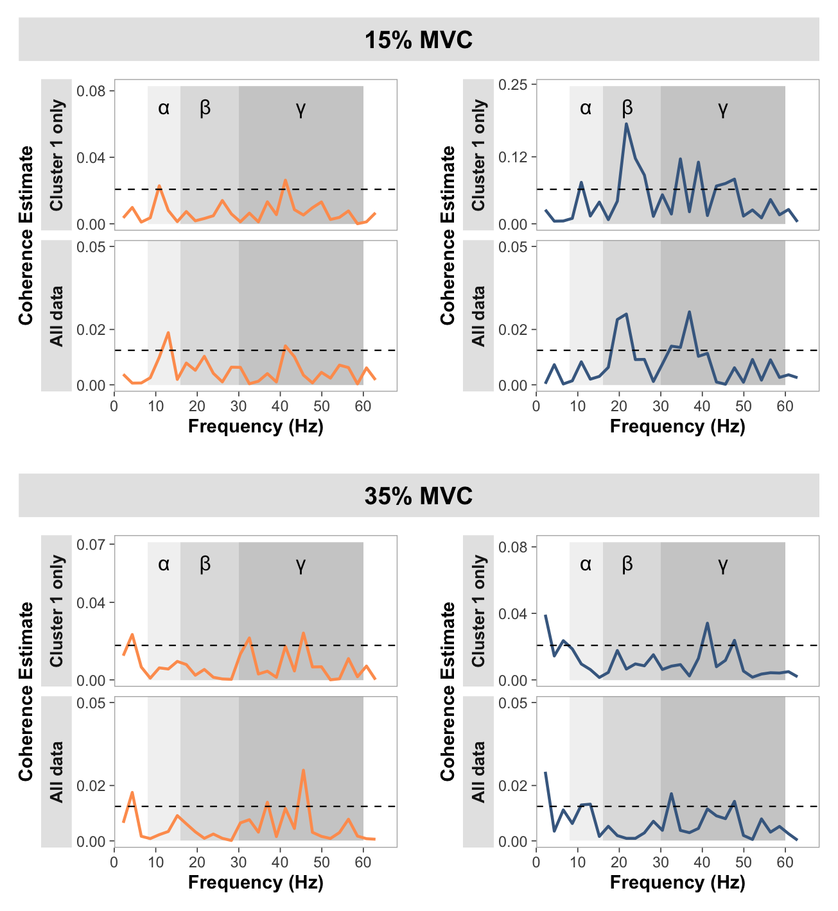